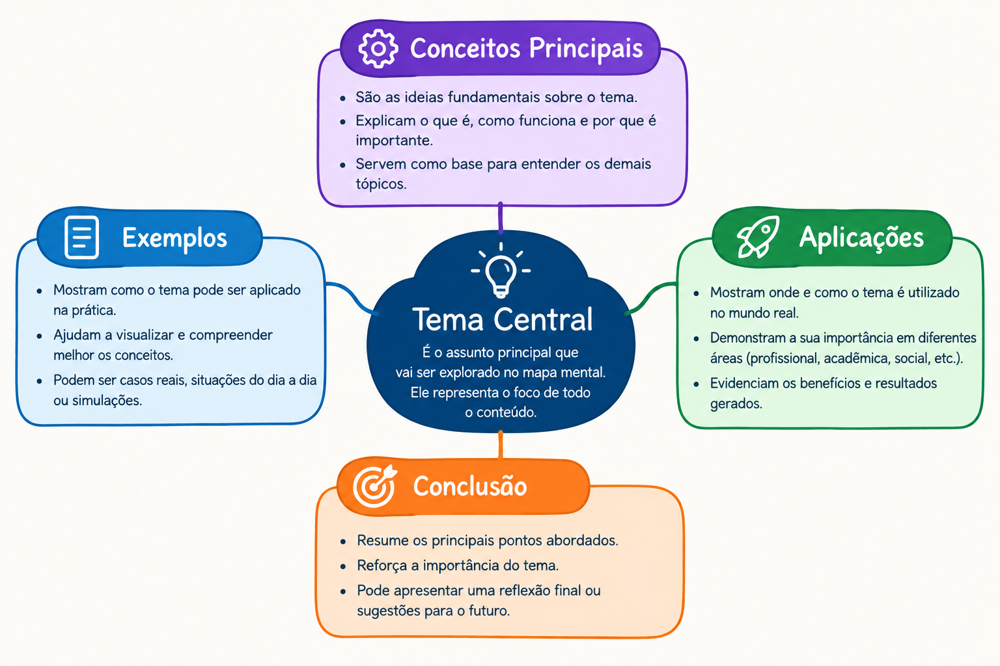
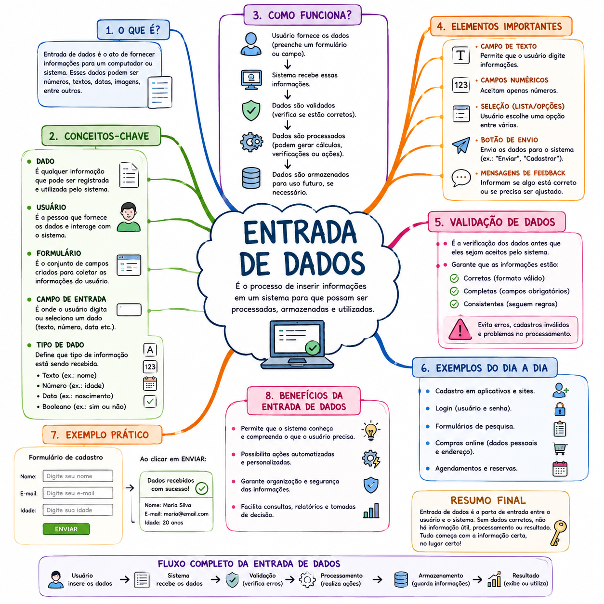
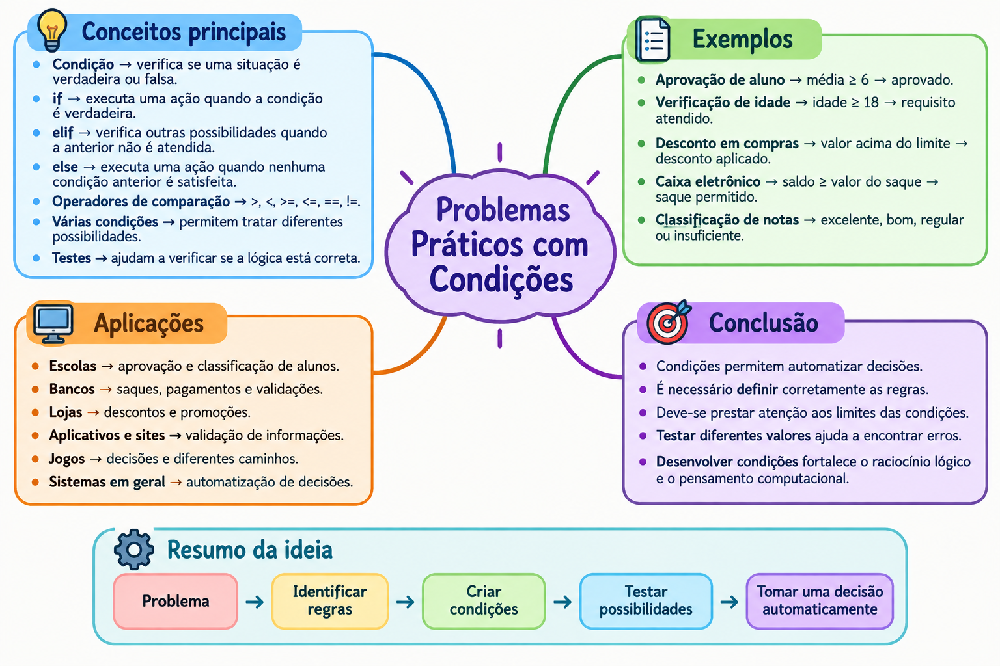
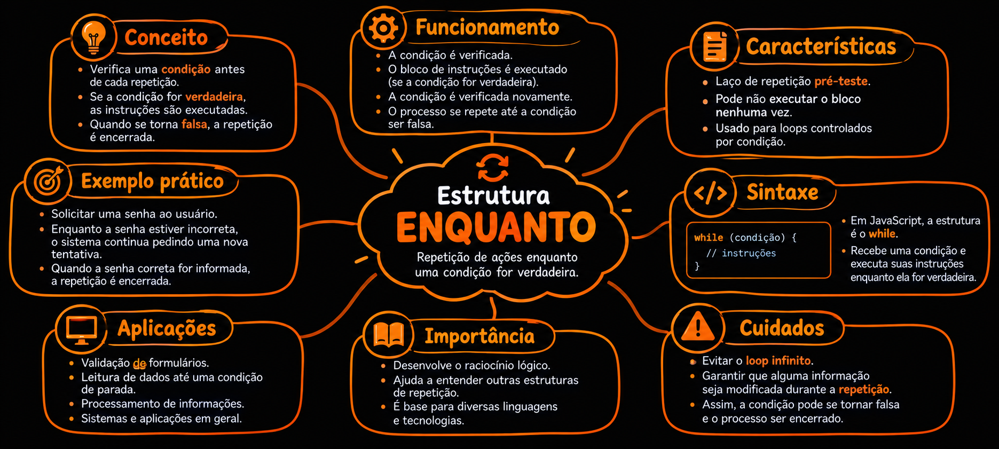
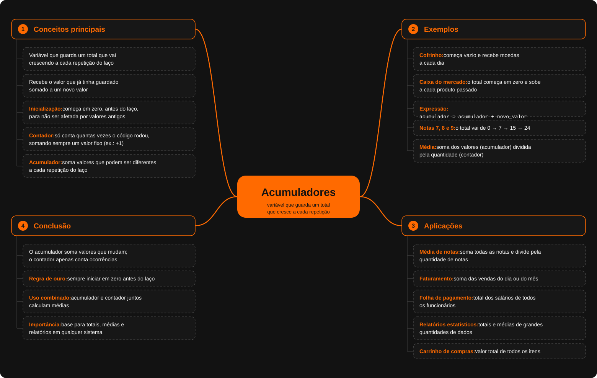

Hardware
Partes físicas do computador, como teclado, mouse, monitor e processador.
Estudo estruturado com aulas, exemplos, vídeos, mapas mentais, atividades e aplicações práticas.
Um computador é uma máquina capaz de receber, processar, armazenar e transmitir informações seguindo instruções programadas. Ele utiliza componentes físicos, chamados de hardware, e programas, chamados de software, para realizar diferentes tarefas. O processador executa as instruções, a memória mantém informações necessárias durante o funcionamento e o armazenamento guarda dados para serem utilizados posteriormente. Dispositivos como teclado, mouse, câmera e sensores permitem a entrada de informações, enquanto telas, caixas de som e outros dispositivos apresentam os resultados. Computadores não estão presentes apenas em notebooks e desktops. Celulares, servidores, caixas eletrônicos, veículos e diversos equipamentos eletrônicos também utilizam sistemas computacionais. Em resumo, um computador é um sistema programável que transforma dados em informações ou resultados por meio da execução de instruções.
Hardware são as partes físicas do computador, como processador, memória, teclado e monitor. Software são os programas e sistemas que dão instruções ao hardware.
Dados são elementos brutos, como números, textos e imagens. Quando esses dados são processados e ganham significado, tornam-se informações.
O computador recebe dados, executa instruções e processa essas informações para produzir um resultado. Esse trabalho é realizado principalmente pelo processador (CPU).
Computadores estão presentes em celulares, caixas eletrônicos, carros, videogames, computadores pessoais e sistemas de automação, realizando tarefas de acordo com os programas instalados.
Partes físicas do computador, como teclado, mouse, monitor e processador.
Relacione o conteúdo a uma situação cotidiana ou a um problema que possa ser resolvido por computador.
informações que o computador recebe, como textos, números, imagens e vídeos.
Assista ao vídeo e, em seguida, realize as atividades propostas nesta unidade.
Responda às questões de revisão sobre O que é um computador? - ALAN ROBADEL. Escolha a quantidade e gere a atividade.
Esta aula integra a Unidade 1 — Introdução à Computação e desenvolve os conhecimentos necessários para avançar na sequência de Algoritmos e Estruturas de Dados.
Identifique os conceitos centrais da aula e registre definições com suas próprias palavras.
Relacione o conteúdo a uma situação cotidiana ou a um problema que possa ser resolvido por computador.
Construa, teste ou analise uma solução utilizando o conhecimento estudado.
Use os conceitos desta aula para construir um mapa mental com o tema O que é um programa?.
Assista ao vídeo e, em seguida, realize as atividades propostas nesta unidade.
Responda às questões de revisão sobre O que é um programa? - ANA ALICE EMERICK RODRIGUES. Escolha a quantidade e gere a atividade.
Esta aula integra a Unidade 1 — Introdução à Computação e desenvolve os conhecimentos necessários para avançar na sequência de Algoritmos e Estruturas de Dados.
Identifique os conceitos centrais da aula e registre definições com suas próprias palavras.
Relacione o conteúdo a uma situação cotidiana ou a um problema que possa ser resolvido por computador.
Construa, teste ou analise uma solução utilizando o conhecimento estudado.
Use os conceitos desta aula para construir um mapa mental com o tema O que é programação?.
Assista ao vídeo e, em seguida, realize as atividades propostas nesta unidade.
Responda às questões de revisão sobre O que é programação? - ANTHONELLA DIAS ARAUJO. Escolha a quantidade e gere a atividade.
Um algoritmo é uma sequência de passos ordenados, claros e lógicos que devem ser seguidos para resolver um problema ou realizar uma tarefa.
Podemos definir um algoritmo como um conjunto de passos que são organizados em uma ordem para obter um resultado ou solucionar algum problema. Desse modo, ele funciona como um guia que mostra o que deve ser feito em cada etapa de uma tarefa. Um exemplo comum usado para explicar seu funcionamento é com uma receita de bolo. Para preparar o bolo, é necessário seguir algumas instruções, sendo elas: separar os ingredientes, misturá-los, colocar a massa em uma forma e levá-la ao forno. Cada uma dessas etapas contribui para que o resultado final seja alcançado.
Além disso, os algoritmos não estão presentes apenas na área da informática. Eles também aparecem em situações comuns do cotidiano, já que sempre que seguimos uma sequência de ações para realizar alguma atividade. Na internet, vemos com frequência que existem algoritmos programados para analisar o comportamento dos usuários e identificar seus interesses, ajudando a apresentar conteúdos, produtos e anúncios que podem ser de interesse pessoal.
Os algoritmos podem ser encontrados desde atividades do dia a dia ou até mesmo com a navegação pela internet.
Exemplo do cotidiano:Ao sair de casa, exige uma sequência normalmente seguida. Como: pegar as chaves, calçar os sapatos, sair de casa, trancar a porta etc.
Ou seja, o simples ato de sair de casa, preparar um almoço ou dobrar uma roupa exige organização e estrutura, atendendo desde problemas lógicos até sistemas operacionais.
Os três são exemplos de instruções para realizar uma sequencia de tarefas.
Ou seja, a receita e o manual podem ser considerados exemplos de algoritmos, pois seguem uma sequência de instruções para chegar a um objetivo.
http://www.significados.chttpsom.br/algoritmo/ - Toda Matéria
https://alinebaptista.com.br/blog/desenvolvimento-pessoal/algoritmos-o-que-sao/ - Aline Baptista
https://pt.scribd.com/document/496380589/Algoritmos-Do-Dia-a-Dia - Gabinete de Modernização das Tecnologias Educacionais
Os conceitos centrais de um algoritmo são a entrada, o processamento e a saída, organizados em uma sequência lógica que pode envolver decisões e repetições para obter um resultado.
Receita de bolo: selecionar os ingredientes, misturar e assar. Esse exemplo mostra que qualquer tarefa pode ser dividida, assim como um algoritmo.
Problema: Criar um algoritmo que receba as notas de um aluno, calcule a média e mostre se ele foi aprovado ou não. O algoritmo funcionará corretamente porque recebe as notas, calcula a média aritmética e utiliza uma estrutura de decisão (Se/Senão) para verificar a situação do aluno.
Use os conceitos desta aula para construir um mapa mental com o tema O que é um algoritmo?.
Assista ao vídeo e, em seguida, realize as atividades propostas nesta unidade.
Responda às questões de revisão sobre O que é um algoritmo? - BIANCA KELL MENDES MELLO. Escolha a quantidade e gere a atividade.
Esta aula integra a Unidade 2 — Fundamentos do Raciocínio Algorítmico e desenvolve os conhecimentos necessários para avançar na sequência de Algoritmos e Estruturas de Dados.
Identifique os conceitos centrais da aula e registre definições com suas próprias palavras.
Relacione o conteúdo a uma situação cotidiana ou a um problema que possa ser resolvido por computador.
Construa, teste ou analise uma solução utilizando o conhecimento estudado.
Use os conceitos desta aula para construir um mapa mental com o tema Pensamento computacional.
Assista ao vídeo e, em seguida, realize as atividades propostas nesta unidade.
Responda às questões de revisão sobre Pensamento computacional - BRUNA BARBOSA MARTINS. Escolha a quantidade e gere a atividade.
Esta aula integra a Unidade 2 — Fundamentos do Raciocínio Algorítmico e desenvolve os conhecimentos necessários para avançar na sequência de Algoritmos e Estruturas de Dados.
Identifique os conceitos centrais da aula e registre definições com suas próprias palavras.
Relacione o conteúdo a uma situação cotidiana ou a um problema que possa ser resolvido por computador.
Construa, teste ou analise uma solução utilizando o conhecimento estudado.
Use os conceitos desta aula para construir um mapa mental com o tema Problemas e soluções.
Responda às questões de revisão sobre Problemas e soluções - CAROLAINE FONSECA DE BRITO. Escolha a quantidade e gere a atividade.
A representação de algoritmos é uma etapa importante no desenvolvimento de sistemas, pois permite organizar uma solução antes de transformá-la em um programa.
A linguagem natural representa um algoritmo por meio de frases comuns, utilizando uma linguagem compreensível para as pessoas.
Para calcular a média de duas notas, primeiro são informadas as notas, depois elas são somadas e o resultado é dividido por dois.
Pode ser utilizada nas primeiras etapas de um projeto para explicar uma solução antes da implementação.
Descreva as etapas necessárias para calcular o valor total de três produtos.
O pseudocódigo representa um algoritmo de maneira estruturada, utilizando uma lógica semelhante à programação.
Um exemplo é representar o processo de verificar se um aluno foi aprovado ou reprovado de acordo com sua nota.
É utilizado no planejamento de sistemas para organizar a lógica antes da implementação.
Crie um pseudocódigo para identificar qual de dois números é maior.
O fluxograma representa um algoritmo de forma gráfica, utilizando símbolos e setas para demonstrar o fluxo de execução.
Um sistema escolar pode utilizar um fluxograma para representar a verificação da aprovação de um aluno.
Pode ser utilizado em sistemas, processos empresariais, cadastros e compras online.
Crie um fluxograma para verificar se uma pessoa é maior ou menor de idade.
O diagrama de blocos utiliza elementos gráficos conectados para representar as etapas de um processo.
Em um sistema de compras, os blocos podem representar o pedido, a verificação do estoque, o pagamento e a confirmação da compra.
Pode ser utilizado para representar processos de sistemas, operações empresariais e desenvolvimento de software.
Instituto Metrópole Digital. Materiais sobre representação de algoritmos.
Materiais de Computação Básica sobre algoritmos e lógica de programação.
.Problema: uma situação que apresenta uma necessidade ou dificuldade e que precisa ser resolvida por meio de uma estratégia adequada. Solução: conjunto de ações ou etapas utilizadas para resolver um problema e alcançar o resultado desejado. Algoritmo: sequência organizada e finita de instruções que descreve como realizar uma tarefa ou solucionar um problema. Raciocínio algorítmico: capacidade de analisar um problema, dividir sua solução em etapas e organizá-las de maneira lógica e eficiente. Lógica de programação: forma de estruturar pensamentos e instruções para que uma solução possa ser compreendida e executada por uma pessoa ou computador. Decomposição: técnica de dividir um problema complexo em partes menores e mais simples, facilitando sua compreensão e resolução. Entrada, processamento e saída: etapas básicas de muitos problemas computacionais: recebem-se os dados, eles são processados de acordo com as regras definidas e, por fim, obtém-se um resultado. Estratégia de solução: caminho escolhido para chegar à resposta de um problema, considerando as etapas, recursos e condições necessárias.
Relacione o conteúdo a uma situação cotidiana ou a um problema que possa ser resolvido por computador.
Construa, teste ou analise uma solução utilizando o conhecimento estudado.

Assista ao vídeo e, em seguida, realize as atividades propostas nesta unidade.
Responda às questões de revisão sobre Representação de algoritmos - EDMILSON BARBOSA. Escolha a quantidade e gere a atividade.
Esta aula integra a Unidade 2 — Fundamentos do Raciocínio Algorítmico e desenvolve os conhecimentos necessários para avançar na sequência de Algoritmos e Estruturas de Dados.
O teste de mesa permite acompanhar passo a passo a execução de um algoritmo. O rastreamento de valores mostra como as variáveis mudam durante o processo. A simulação permite prever o resultado do algoritmo sem executá-lo no computador. A identificação de erros ajuda a encontrar e corrigir falhas na lógica do algoritmo.
Imagine um sistema de supermercado que calcula o valor total de uma compra. O teste de mesa permite acompanhar o valor acumulado a cada produto adicionado. Assim, é possível simular a execução do algoritmo passo a passo. Caso o resultado esteja incorreto, o rastreamento ajuda a identificar onde ocorreu o erro.
Construa, teste ou analise uma solução utilizando o conhecimento estudado.
Use os conceitos desta aula para construir um mapa mental com o tema Teste de mesa.
Assista ao vídeo e, em seguida, realize as atividades propostas nesta unidade.
Responda às questões de revisão sobre Teste de mesa - EDUARDO HENRIQUE CARDOSO RIBEIRO. Escolha a quantidade e gere a atividade.
Esta aula integra a Unidade 2 — Fundamentos do Raciocínio Algorítmico e desenvolve os conhecimentos necessários para avançar na sequência de Algoritmos e Estruturas de Dados.
Identifique os conceitos centrais da aula e registre definições com suas próprias palavras.
Relacione o conteúdo a uma situação cotidiana ou a um problema que possa ser resolvido por computador.
Construa, teste ou analise uma solução utilizando o conhecimento estudado.
Use os conceitos desta aula para construir um mapa mental com o tema Construindo o primeiro algoritmo.
Assista ao vídeo e, em seguida, realize as atividades propostas nesta unidade.
Responda às questões de revisão sobre Construindo o primeiro algoritmo -GUILHERME ISAQUE DE CARVALHO SOUZA SILVEIRA. Escolha a quantidade e gere a atividade.
Esta aula integra a Unidade 3 — Variáveis e Operadores e desenvolve os conhecimentos necessários para avançar na sequência de Algoritmos e Estruturas de Dados.
Estudo orientado sobre Variáveis, com conceitos, exemplos, exercícios e aplicação prática.
Identifique os conceitos centrais da aula e registre definições com suas próprias palavras.
Relacione o conteúdo a uma situação cotidiana ou a um problema que possa ser resolvido por computador.
Construa, teste ou analise uma solução utilizando o conhecimento estudado.
Use os conceitos desta aula para construir um mapa mental com o tema Variáveis.
Assista ao vídeo e, em seguida, realize as atividades propostas nesta unidade.
Responda às questões de revisão sobre Variáveis - ISABEL DE CASTRO DOMICIANO RODRIGUES CARDOSO. Escolha a quantidade e gere a atividade.
Esta aula integra a Unidade 3 — Variáveis e Operadores e desenvolve os conhecimentos necessários para avançar na sequência de Algoritmos e Estruturas de Dados.
Estudo orientado sobre Constantes, com conceitos, exemplos, exercícios e aplicação prática.
Identifique os conceitos centrais da aula e registre definições com suas próprias palavras.
Relacione o conteúdo a uma situação cotidiana ou a um problema que possa ser resolvido por computador.
Construa, teste ou analise uma solução utilizando o conhecimento estudado.
Use os conceitos desta aula para construir um mapa mental com o tema Constantes.
Responda às questões de revisão sobre Constantes - ISABELLA OLIVEIRA NOLASCO BARRELETE. Escolha a quantidade e gere a atividade.
Esta aula integra a Unidade 3 — Variáveis e Operadores e desenvolve os conhecimentos necessários para avançar na sequência de Algoritmos e Estruturas de Dados.
Estudo orientado sobre Tipos de dados, com conceitos, exemplos, exercícios e aplicação prática.
Identifique os conceitos centrais da aula e registre definições com suas próprias palavras.
Relacione o conteúdo a uma situação cotidiana ou a um problema que possa ser resolvido por computador.
Construa, teste ou analise uma solução utilizando o conhecimento estudado.
Use os conceitos desta aula para construir um mapa mental com o tema Tipos de dados.
Responda às questões de revisão sobre Tipos de dados - JOANN SMITH CUSTODIO. Escolha a quantidade e gere a atividade.
A entrada de dados é o processo de inserir informações em um sistema, programa ou banco de dados para que elas possam ser armazenadas, organizadas e utilizadas posteriormente. Esse processo está presente em praticamente todas as empresas e é fundamental para o funcionamento de diversos sistemas digitais.
A entrada de dados consiste em fornecer informações para um computador ou sistema. Esses dados podem ser digitados por uma pessoa, enviados por um formulário, importados de arquivos ou coletados automaticamente por dispositivos e sistemas.
Por exemplo, quando um cliente preenche seu nome, e-mail e telefone em um formulário de cadastro, essas informações são consideradas dados de entrada.
De maneira geral, o processo de entrada de dados acontece em algumas etapas:
A entrada de dados pode acontecer de várias formas no dia a dia. Alguns exemplos são:
Imagine um formulário de cadastro:
Nome: João Silva
Idade: 25
E-mail: joao@email.com
Quando o usuário preenche esses campos e clica em "Cadastrar", os valores informados são enviados para o sistema. Nesse caso, o nome, a idade e o e-mail são exemplos de dados de entrada.
Na programação, existem diversas maneiras de receber informações do usuário. Em JavaScript, por exemplo, podemos utilizar o prompt() para solicitar um dado:
const nome = prompt("Digite seu nome:");
console.log("Olá, " + nome);Nesse exemplo, o usuário fornece seu nome. O valor digitado é armazenado na constante nome e depois utilizado pelo programa.
Também podemos receber dados por meio de elementos HTML, como campos de texto, caixas de seleção e botões:
<input type="text" id="nome" placeholder="Digite seu nome">
<button id="botao">Enviar</button>O usuário fornece a informação no campo e o JavaScript pode capturar esse valor para realizar alguma ação.
Uma entrada de dados bem estruturada é importante porque informações incorretas podem causar problemas em outras etapas do sistema. Dados digitados de maneira errada podem gerar resultados incorretos, dificultar análises e prejudicar processos da empresa.
Por isso, sistemas costumam utilizar validações, como verificar se um campo foi preenchido, se um e-mail possui um formato válido ou se determinado valor está dentro de um limite permitido.
As informações fornecidas pelos usuários também precisam ser tratadas com segurança. Dados pessoais, senhas e outras informações importantes devem ser protegidos contra acessos não autorizados.
Boas práticas incluem utilizar validações, controlar permissões de acesso, proteger senhas e armazenar informações de maneira segura.
A entrada de dados é uma das etapas fundamentais de qualquer sistema informatizado. É por meio dela que as informações chegam ao sistema e podem posteriormente ser processadas, armazenadas e utilizadas.
Em uma empresa, uma entrada de dados organizada e confiável contribui para melhorar processos, reduzir erros e facilitar o acesso às informações necessárias para as atividades do negócio.
A entrada de dados é o processo de inserir informações em um sistema, aplicativo ou computador. Esses dados podem ser fornecidos pelo usuário por meio de campos de texto, botões, formulários, menus e outros elementos.
Dado é qualquer informação que pode ser inserida, armazenada ou utilizada por um sistema. Exemplos incluem nomes, idades, endereços, números e datas.
É o momento em que o usuário fornece informações para o sistema. Por exemplo, quando uma pessoa preenche seu nome, e-mail e senha em um formulário de cadastro.
O usuário é a pessoa que utiliza o sistema e fornece as informações necessárias para realizar determinada ação.
O formulário é uma área da aplicação criada para receber informações do usuário. Ele pode conter campos como nome, e-mail, senha, idade e endereço.
O campo de entrada é o espaço onde o usuário pode digitar ou selecionar uma informação. Um exemplo comum é a caixa de texto utilizada para informar um nome.
O tipo de dado indica qual formato de informação está sendo recebido pelo sistema. Alguns exemplos são texto, número, data e valores booleanos, que representam verdadeiro ou falso.
O botão de envio é utilizado para confirmar ou enviar as informações preenchidas pelo usuário. Em formulários HTML, um exemplo é o botão com o tipo submit.
A validação é a verificação dos dados fornecidos pelo usuário. Ela ajuda a identificar informações incorretas, incompletas ou inválidas antes que sejam utilizadas pelo sistema.
Depois que os dados são recebidos, o sistema pode processá-los para realizar cálculos, verificar informações, gerar resultados ou executar outras ações.
O armazenamento é o processo de guardar os dados para que possam ser utilizados posteriormente. Essas informações podem ser armazenadas em bancos de dados ou outros sistemas de armazenamento.
De forma simples, o processo começa quando o usuário fornece uma informação. O sistema recebe esses dados, verifica se estão corretos, realiza o processamento necessário e, quando necessário, armazena as informações para uso futuro.
Usuário → Entrada de dados → Validação → Processamento → Armazenamento → Resultado
Imagine um aplicativo de cadastro. O usuário informa seu nome e sua idade. O sistema recebe essas informações, verifica se os dados foram preenchidos corretamente, processa as informações e pode armazená-las em um banco de dados.
Entrada de dados é o processo de fornecer informações a um sistema para que elas possam ser recebidas, verificadas, processadas, armazenadas e utilizadas.
Preencha os campos abaixo. Ao clicar em "Enviar dados", as informações digitadas serão mostradas na tela.
Para colocar em prática o conhecimento sobre entrada de dados, vamos construir um pequeno formulário capaz de receber informações do usuário.
Crie um formulário contendo campos para nome, e-mail e idade. O usuário deverá preencher essas informações e clicar em um botão para enviá-las.
Após o envio, o programa deverá capturar os dados digitados e apresentar uma mensagem na própria página mostrando as informações recebidas. Dessa forma, é possível observar na prática como um sistema recebe e utiliza dados fornecidos pelo usuário.
Depois de criar o formulário, teste diferentes informações nos campos. Verifique também o que acontece quando algum campo obrigatório não é preenchido. Essa etapa ajuda a compreender a importância da entrada e da validação de dados em aplicações.
O objetivo da prática é compreender como os dados são inseridos pelo usuário, recebidos pelo sistema e utilizados para produzir um resultado.

Assista ao vídeo e, em seguida, realize as atividades propostas nesta unidade.
Responda às questões de revisão sobre Entrada de dados - KAISSON BASTOS DE SOUZA. Escolha a quantidade e gere a atividade.
Esta aula integra a Unidade 3 — Variáveis e Operadores e desenvolve os conhecimentos necessários para avançar na sequência de Algoritmos e Estruturas de Dados.
Estudo orientado sobre Saída de dados, com conceitos, exemplos, exercícios e aplicação prática.
Identifique os conceitos centrais da aula e registre definições com suas próprias palavras.
Relacione o conteúdo a uma situação cotidiana ou a um problema que possa ser resolvido por computador.
Construa, teste ou analise uma solução utilizando o conhecimento estudado.
Use os conceitos desta aula para construir um mapa mental com o tema Saída de dados.
Responda às questões de revisão sobre Saída de dados - KEROLLY STHEFANY SANGY DA SILVA. Escolha a quantidade e gere a atividade.
Esta aula integra a Unidade 3 — Variáveis e Operadores e desenvolve os conhecimentos necessários para avançar na sequência de Algoritmos e Estruturas de Dados.
Estudo orientado sobre Operadores aritméticos, com conceitos, exemplos, exercícios e aplicação prática.
Identifique os conceitos centrais da aula e registre definições com suas próprias palavras.
Relacione o conteúdo a uma situação cotidiana ou a um problema que possa ser resolvido por computador.
Construa, teste ou analise uma solução utilizando o conhecimento estudado.
Use os conceitos desta aula para construir um mapa mental com o tema Operadores aritméticos.
Responda às questões de revisão sobre Operadores aritméticos - LANA CARLA BASTOS MUZY. Escolha a quantidade e gere a atividade.
Esta aula integra a Unidade 3 — Variáveis e Operadores e desenvolve os conhecimentos necessários para avançar na sequência de Algoritmos e Estruturas de Dados.
Estudo orientado sobre Operadores relacionais, com conceitos, exemplos, exercícios e aplicação prática.
Identifique os conceitos centrais da aula e registre definições com suas próprias palavras.
Relacione o conteúdo a uma situação cotidiana ou a um problema que possa ser resolvido por computador.
Construa, teste ou analise uma solução utilizando o conhecimento estudado.
Use os conceitos desta aula para construir um mapa mental com o tema Operadores relacionais.
Responda às questões de revisão sobre Operadores relacionais - LETICIA ABALEM DE PAULA. Escolha a quantidade e gere a atividade.
Esta aula integra a Unidade 3 — Variáveis e Operadores e desenvolve os conhecimentos necessários para avançar na sequência de Algoritmos e Estruturas de Dados.
Estudo orientado sobre Operadores lógicos, com conceitos, exemplos, exercícios e aplicação prática.
Os operadores lógicos são símbolos ou palavras usados para combinar valores ou proposições verdadeiras (V ou true) e falsas (F ou false), resultando em um único valor lógico.
Eles são fundamentais na matemática, na lógica formal e na Linguagem C.
As operações lógicas são ensinadas em vários cursos de tecnologia de diferentes formas. Em cursos de eletrônica, por exemplo, são ensinadas as portas lógicas, enquanto em programação aprendemos os operadores lógicos. No fundo, a ideia é a mesma.
Também chamada de conjunção. Retorna verdadeiro apenas se todas as condições envolvidas forem verdadeiras.
Símbolos: ∧ ou &&
Exemplo: V && V resulta em V. Qualquer outro caso resulta em F.
Também chamada de disjunção. Retorna verdadeiro se pelo menos uma das condições for verdadeira.
Símbolos: ∨ ou ||
Exemplo: F || V resulta em V. Apenas F || F resulta em F.
Também chamada de negação. Inverte o valor lógico atual. O que é verdadeiro vira falso e o que é falso vira verdadeiro.
Símbolos: ¬, ! ou not
Retorna verdadeiro quando apenas uma das condições é verdadeira. Se as duas forem verdadeiras, o resultado será falso.
Exemplo: “Ou vou ao cinema, ou fico em casa.”
| Entrada 1 | Entrada 2 | Resultado |
|---|---|---|
| V | V | V |
| V | F | F |
| F | V | F |
| F | F | F |
| Entrada 1 | Entrada 2 | Resultado |
|---|---|---|
| V | V | V |
| V | F | V |
| F | V | V |
| F | F | F |
| Entrada | Resultado |
|---|---|
| V | F |
| F | V |
Os operadores lógicos trabalham sempre com valores booleanos, ou seja, verdadeiro ou falso. Eles são usados para tomar decisões em programas, sistemas digitais e até em raciocínio matemático.
Só retorna verdadeiro se todas as condições forem verdadeiras.
Exemplo: “Está ensolarado E é fim de semana.” Só será verdadeiro se as duas condições forem verdadeiras.
Retorna verdadeiro se pelo menos uma condição for verdadeira.
Exemplo: “Vou ao parque se estiver ensolarado OU se for feriado.” Basta uma das condições ser verdadeira.
Inverte o valor lógico.
Exemplo: “NÃO está chovendo.” Será verdadeiro se não estiver chovendo.
Retorna verdadeiro se apenas uma condição for verdadeira, mas não as duas ao mesmo tempo.
Uma expressão pode assumir dois valores: Verdadeiro (V) ou Falso (F).
É verdadeiro somente quando todas as condições são verdadeiras. Exemplo: V AND V = V.
É verdadeiro quando pelo menos uma condição é verdadeira. Exemplo: V OR F = V.
Inverte o valor lógico. Exemplo: NOT V = F.
É verdadeiro quando apenas uma das condições é verdadeira.
Mostra todas as combinações possíveis de valores lógicos e seus resultados.
É a combinação de valores, condições e operadores que produz um resultado lógico.
Define a ordem em que os operadores são avaliados. Parênteses podem ser usados para deixar essa ordem clara.
É o tipo de dado que representa valores lógicos: true (verdadeiro) e false (falso).
Relacione o conteúdo a uma situação cotidiana ou a um problema que possa ser resolvido por computador.
Construa, teste ou analise uma solução utilizando o conhecimento estudado.
Use os conceitos desta aula para construir um mapa mental com o tema Operadores lógicos.
Responda às questões de revisão sobre Operadores lógicos - MARCOS VINÍCIUS BARBOSA MIRANDA FILHO. Escolha a quantidade e gere a atividade.
Esta aula integra a Unidade 4 — Estruturas Condicionais e desenvolve os conhecimentos necessários para avançar na sequência de Algoritmos e Estruturas de Dados.
Estudo orientado sobre Tomada de decisão, com conceitos, exemplos, exercícios e aplicação prática.
Identifique os conceitos centrais da aula e registre definições com suas próprias palavras.
Relacione o conteúdo a uma situação cotidiana ou a um problema que possa ser resolvido por computador.
Construa, teste ou analise uma solução utilizando o conhecimento estudado.
Use os conceitos desta aula para construir um mapa mental com o tema Tomada de decisão.
Assista ao vídeo e, em seguida, realize as atividades propostas nesta unidade.
Responda às questões de revisão sobre Tomada de decisão - MARIA CLARA DOS SANTOS FONSECA. Escolha a quantidade e gere a atividade.
Esta aula integra a Unidade 4 — Estruturas Condicionais e desenvolve os conhecimentos necessários para avançar na sequência de Algoritmos e Estruturas de Dados.
Estudo orientado sobre Estrutura SE, com conceitos, exemplos, exercícios e aplicação prática.
Identifique os conceitos centrais da aula e registre definições com suas próprias palavras.
Relacione o conteúdo a uma situação cotidiana ou a um problema que possa ser resolvido por computador.
Construa, teste ou analise uma solução utilizando o conhecimento estudado.
Use os conceitos desta aula para construir um mapa mental com o tema Estrutura SE.
Responda às questões de revisão sobre Estrutura SE - MARIA PAULA FERREIRA CUNHA. Escolha a quantidade e gere a atividade.
Esta aula integra a Unidade 4 — Estruturas Condicionais e desenvolve os conhecimentos necessários para avançar na sequência de Algoritmos e Estruturas de Dados.
Estudo orientado sobre SE...SENÃO, com conceitos, exemplos, exercícios e aplicação prática.
Em Algoritmos e Estruturas de Dados, um algoritmo é essencialmente uma sequência finita de passos para resolver um problema. No entanto, o mundo real não é linear. Para que um programa seja verdadeiramente útil, ele precisa ser inteligente o suficiente para tomar decisões com base nos dados que recebe.
É aqui que entram as Estruturas Condicionais (ou estruturas de controle de fluxo). Elas são o "cérebro" das operações lógicas, permitindo que o algoritmo avalie uma situação e escolha qual caminho seguir.
A estrutura condicional SE...SENÃO é a ferramenta fundamental para bifurcar a execução de um programa de computador. Ela funciona através da avaliação de uma expressão lógica (uma pergunta matemática ou de comparação) que obrigatoriamente resultará em Verdadeiro ou Falso.
Abaixo, veja como essa lógica é escrita em algoritmos clássicos, como um sistema de aprovação de notas de alunos:
Algoritmo "VerificaAprovacao"
Var
nota: real
Inicio
Escreval("Digite a nota do aluno:")
Leia(nota)
// Início da Estrutura Condicional
SE (nota >= 6.0) ENTAO
Escreval("Aluno APROVADO!")
SENAO
Escreval("Aluno REPROVADO!")
FIMSE
Fimalgoritmo
Para consolidar o aprendizado, tente desenvolver o raciocínio lógico (em pseudocódigo ou na sua linguagem de programação favorita) para os seguintes problemas:
numero % 2 == 0), exiba "O número é Par", senão, exiba "O número é Ímpar".Na vida real, você interage com a estrutura SE...SENÃO o tempo todo. Quando você tenta fazer login no seu e-mail ou rede social, o algoritmo no servidor do site executa algo muito parecido com isso:
SE (senha_digitada for IGUAL a senha_banco_de_dados) ENTAO
Iniciar sessão do usuário e carregar página inicial
SENAO
Exibir mensagem de erro: "Usuário ou senha incorretos"
FIMSE
Dominar o uso do SE...SENÃO é o primeiro grande passo para criar sistemas interativos, seguros e capazes de tomar decisões dinâmicas com base no comportamento do usuário.
Registro e definições simplificadas elaboradas com palavras próprias.
Em minhas palavras: E a forma de medir o "esforco" do computador. Em vez de medir em segundos (ja que varia de maquina para maquina), medimos quantas operacoes o codigo faz conforme a quantidade de dados cresce. Serve para saber se o programa vai travar quando tiver milhoes de usuarios.
Em minhas palavras: E quando uma funcao resolve um problema chamando a si mesma repetidas vezes em versoes menores do mesmo problema. Funciona como bonecas russas (matrioscas): voce vai abrindo ate encontrar a menorzinha de todas (que e o caso base, de onde o codigo finalmente para e retorna).
Em minhas palavras: Um ponteiro nao guarda o valor de um dado (como o numero 10), mas sim o endereco do armario na memoria RAM onde esse valor esta guardado. E como ter um papel anotado com o numero do gaveteiro em vez de carregar o objeto no bolso.
Em minhas palavras: Sao as estrategias para organizar dados baguncados (como ordenar nomes em ordem alfabetica) e encontrar um item especifico rapidamente. A Busca Binaria, por exemplo, e como procurar uma palavra no dicionario abrindo sempre no meio e descartando a metade inutil.
Como os algoritmos e as estruturas de dados resolvem problemas do nosso dia a dia ou de sistemas de computador.
A Situação: Você precisa ir para o trabalho, mas quer evitar vias engarrafadas e chegar no menor tempo possível.
Como o computador resolve: O mapa é armazenado usando uma estrutura de dados chamada Grafo (onde cada cruzamento é um ponto e cada rua é uma linha ligando eles). O aplicativo então roda um Algoritmo de Caminho Mais Curto (como o Algoritmo de Dijkstra). Ele calcula matematicamente todas as rotas possíveis e escolhe a que tem o menor "peso" (tempo ou distância).
A Situação: Você está escrevendo um texto, apaga um parágrafo por engano e precisa recuperar o que acabou de apagar.
Como o computador resolve: Os editores de texto usam uma estrutura de dados chamada Pilha (Stack). Cada ação que você faz (digitar, apagar, colocar em negrito) é colocada no topo dessa pilha. Quando você aperta "Desfazer", o algoritmo simplesmente remove e reverte a última ação que estava no topo (princípio LIFO: o último a entrar é o primeiro a sair).
A Situação: Cinco pessoas no mesmo escritório clicam em "Imprimir" quase ao mesmo tempo. Como a impressora não entra em colapso?
Como o computador resolve: O sistema operacional gerencia as requisições usando uma estrutura de dados chamada Fila (Queue). O algoritmo garante que o primeiro documento que chegou à memória será o primeiro a ser impresso (princípio FIFO: o primeiro a entrar é o primeiro a sair). Os outros aguardam pacientemente a sua vez, exatamente como uma fila de padaria.
Aplicando o conceito de Pilha (Stack) para criar um sistema de "Desfazer" (Ctrl+Z) em JavaScript.
Vamos criar uma classe simples que simula o histórico de digitação de um usuário usando os métodos nativos de array como uma Pilha (onde o último item a entrar é o primeiro a sair - LIFO).
class SistemaDesfazer {
constructor() {
this.pilhaDeAcoes = []; // Nossa estrutura de dados
}
// Adiciona uma nova ação no topo da pilha
escrever(texto) {
this.pilhaDeAcoes.push(texto);
console.log(`Ação salva: "${texto}"`);
}
// Remove e retorna a última ação (Ctrl+Z)
desfazer() {
if (this.pilhaDeAcoes.length === 0) {
return "Nada para desfazer!";
}
let acaoDesfeita = this.pilhaDeAcoes.pop();
console.log(`Desfez: "${acaoDesfeita}"`);
}
}
Agora, vamos instanciar nosso sistema, simular a digitação de algumas palavras e, em seguida, testar o botão de desfazer.
const editor = new SistemaDesfazer();
editor.escrever("Olá");
editor.escrever("Mundo");
editor.desfazer(); // Simula o Ctrl+Z
Saída no Console (Resultado):
> Ação salva: "Olá"
> Ação salva: "Mundo"
> Desfez: "Mundo"
push) quanto remover (pop) no final de um array têm complexidade O(1) (Tempo Constante). Isso significa que, mesmo se o usuário tiver digitado 1 milhão de palavras, o "Desfazer" será instantâneo, pois o computador não precisa procurar a palavra, ele vai direto no topo da pilha.
Use os conceitos desta aula para construir um mapa mental com o tema SE...SENÃO.
Responda às questões de revisão sobre SE...SENÃO - MATHEUS BATISTA DA CUNHA ALEXANDRE. Escolha a quantidade e gere a atividade.
Esta aula integra a Unidade 4 — Estruturas Condicionais e desenvolve os conhecimentos necessários para avançar na sequência de Algoritmos e Estruturas de Dados.
Estudo orientado sobre Condições encadeadas, com conceitos, exemplos, exercícios e aplicação prática.
Identifique os conceitos centrais da aula e registre definições com suas próprias palavras.
Relacione o conteúdo a uma situação cotidiana ou a um problema que possa ser resolvido por computador.
Construa, teste ou analise uma solução utilizando o conhecimento estudado.
Use os conceitos desta aula para construir um mapa mental com o tema Condições encadeadas.
Responda às questões de revisão sobre Condições encadeadas - MIGUEL SEBASTIAO BOREL DA SILVA. Escolha a quantidade e gere a atividade.
As questões de múltipla escolha constituem um dos instrumentos mais utilizados em processos de avaliação da aprendizagem, especialmente em exames educacionais, processos seletivos e avaliações de larga escala. Entretanto, a qualidade de uma avaliação objetiva depende diretamente da qualidade técnica dos itens que a compõem. Este trabalho apresenta uma análise das estruturas de múltipla escolha, abordando sua definição, finalidade, componentes, principais formatos, critérios de elaboração, construção do enunciado, formulação das alternativas, utilização de distratores, relação entre competências e habilidades e procedimentos de revisão. A pesquisa fundamenta-se em documentos institucionais do Instituto Nacional de Estudos e Pesquisas Educacionais Anísio Teixeira (Inep) e em literatura científica sobre avaliação educacional e elaboração de questões objetivas. A análise demonstra que um item de múltipla escolha adequado deve apresentar alinhamento com os objetivos de aprendizagem, clareza linguística, coerência entre seus componentes, apenas uma resposta correta ou melhor resposta claramente identificável e alternativas plausíveis. Ressalta-se, ainda, que questões de múltipla escolha não precisam limitar-se à memorização de informações, podendo avaliar compreensão, aplicação, análise, interpretação e resolução de situações-problema. Por fim, apresentam-se recomendações para elaboração e revisão dos itens, considerando princípios técnicos de validade, confiabilidade, equidade e qualidade pedagógica.
A avaliação constitui parte fundamental do processo educacional, pois permite obter informações sobre os conhecimentos, as habilidades e as competências desenvolvidas pelos estudantes. Entre os diferentes instrumentos avaliativos existentes, as questões de múltipla escolha destacam-se pela possibilidade de avaliar um conjunto amplo de conteúdos em período relativamente reduzido, além de possibilitarem correção objetiva e sistematização dos resultados.
No contexto brasileiro, a utilização de itens objetivos possui grande relevância em avaliações conduzidas pelo Instituto Nacional de Estudos e Pesquisas Educacionais Anísio Teixeira (Inep). O Banco Nacional de Itens (BNI), por exemplo, reúne itens elaborados e revisados segundo critérios técnico-pedagógicos e psicométricos para subsidiar diferentes avaliações e exames nacionais (INEP, 2026). Serviços e Informações do Brasil
O emprego de questões de múltipla escolha, contudo, não garante, por si só, uma avaliação de qualidade. Um item mal elaborado pode introduzir ambiguidades, fornecer pistas involuntárias, avaliar apenas a capacidade de interpretação do texto ou permitir mais de uma resposta defensável. Por essa razão, a construção de itens exige planejamento, domínio do conteúdo e conhecimento dos princípios técnicos de elaboração e revisão.
O próprio Inep orienta que um item seja concebido como uma unidade de proposição relacionada a determinada habilidade de uma matriz de referência, estabelecendo coerência e articulação entre texto-base, enunciado e alternativas (INEP, 2024). Inep Download
Dessa maneira, o presente trabalho tem como objetivo analisar as estruturas de múltipla escolha, identificando seus principais componentes, formatos, características e critérios de qualidade, bem como apresentar recomendações para sua elaboração de acordo com princípios utilizados na avaliação educacional brasileira.
O trabalho caracteriza-se como uma pesquisa bibliográfica e documental, de abordagem qualitativa e caráter exploratório. Foram consultados documentos institucionais e materiais técnicos relacionados à elaboração de itens avaliativos, especialmente publicações disponibilizadas pelo Inep, além de artigos científicos sobre construção e avaliação de questões de múltipla escolha.
Entre os documentos analisados destacam-se os guias de elaboração e revisão de itens do Inep, documentos relativos às matrizes de referência e informações institucionais sobre o Banco Nacional de Itens. Também foram consideradas publicações científicas internacionais sobre construção de questões objetivas, especialmente aquelas relacionadas à estrutura do item, formulação de alternativas, elaboração de distratores e avaliação da qualidade dos instrumentos.
Quanto à apresentação do trabalho, foram consideradas as normas brasileiras de informação e documentação aplicáveis à produção acadêmica, especialmente a ABNT NBR 14724:2024, relativa à apresentação de trabalhos acadêmicos; a ABNT NBR 10520:2023, relativa às citações; a ABNT NBR 6023:2025, relativa às referências; a ABNT NBR 6024:2012, relativa à numeração progressiva das seções; e a ABNT NBR 6028:2021, relativa a resumos, resenhas e recensões. A Universidade Federal de Viçosa, por exemplo, disponibiliza manual atualizado contemplando a NBR 14724:2024, a NBR 6028:2021 e a NBR 10520:2023. Programa de Pós-Graduação UFV
A questão de múltipla escolha é um item de avaliação no qual o participante recebe uma situação, pergunta ou problema e deve selecionar uma resposta entre alternativas previamente apresentadas. Na forma mais comum, existe uma resposta correta ou considerada a melhor resposta, enquanto as demais alternativas funcionam como distratores.
A literatura especializada identifica como componentes fundamentais do item o enunciado ou texto-base, o comando da questão, a resposta correta e os distratores. Em uma estrutura convencional, portanto, o participante deve compreender a situação apresentada, identificar aquilo que está sendo solicitado e selecionar a alternativa que melhor responde ao problema proposto (RUIZ et al., 2005). PubMed Central (PMC)
A literatura especializada identifica como componentes fundamentais do item o enunciado ou texto-base, o comando da questão, a resposta correta e os distratores. Em uma estrutura convencional, portanto, o participante deve compreender a situação apresentada, identificar aquilo que está sendo solicitado e selecionar a alternativa que melhor responde ao problema proposto (RUIZ et al., 2005). PubMed Central (PMC) É importante destacar que uma questão de múltipla escolha não deve ser entendida simplesmente como uma pergunta acompanhada por algumas respostas aleatórias. A construção de um item envolve uma relação planejada entre o que se pretende avaliar, a situação apresentada ao estudante e as alternativas disponíveis.
A literatura especializada identifica como componentes fundamentais do item o enunciado ou texto-base, o comando da questão, a resposta correta e os distratores. Em uma estrutura convencional, portanto, o participante deve compreender a situação apresentada, identificar aquilo que está sendo solicitado e selecionar a alternativa que melhor responde ao problema proposto (RUIZ et al., 2005). PubMed Central (PMC) Nas avaliações educacionais de larga escala, essa relação é ainda mais importante. O Inep informa que as matrizes de referência orientam a construção dos itens ao especificarem competências e habilidades que se pretende avaliar. Essas matrizes não correspondem à totalidade do currículo, mas constituem um recorte das competências e conteúdos considerados relevantes para determinada avaliação (INEP, 2026). Serviços e Informações do Brasil
Identifique os conceitos centrais da aula e registre definições com suas próprias palavras.
Relacione o conteúdo a uma situação cotidiana ou a um problema que possa ser resolvido por computador.
Construa, teste ou analise uma solução utilizando o conhecimento estudado.
Use os conceitos desta aula para construir um mapa mental com o tema Estruturas de múltipla escolha.
Responda às questões de revisão sobre Estruturas de múltipla escolha - MIQUEIAS DE SOUZA PEDRO. Escolha a quantidade e gere a atividade.
Os problemas práticos com condições estão presentes em diversas situações da programação, pois muitos sistemas precisam analisar informações antes de tomar uma decisão. Em um programa, uma condição permite verificar se determinada situação é verdadeira ou falsa e, a partir desse resultado, escolher qual ação deverá ser realizada. Segundo Deitel e Deitel (2017), as estruturas de decisão são fundamentais para desenvolver programas capazes de executar diferentes ações de acordo com as circunstâncias encontradas.
Um exemplo simples está relacionado à aprovação de um aluno. Imagine que uma escola determine que estudantes com média igual ou superior a 6,0 sejam aprovados. O programa deverá receber a nota, verificar a condição e apresentar o resultado correspondente. Se a média for 6,0 ou maior, o sistema poderá informar que o aluno foi aprovado; caso contrário, poderá informar que ele foi reprovado.
Outro problema comum é a verificação de idade. Um sistema pode precisar descobrir se uma pessoa possui idade suficiente para realizar determinada atividade. Para isso, o programa recebe a idade do usuário e compara esse valor com a idade mínima estabelecida. Caso a condição seja atendida, uma ação poderá ser permitida; caso contrário, o sistema deverá apresentar uma mensagem informando que o requisito não foi cumprido.
As condições também podem ser utilizadas em sistemas de compras e descontos. Uma loja pode estabelecer, por exemplo, que compras acima de determinado valor receberão um desconto. O programa deverá verificar o preço total da compra e decidir se o desconto será aplicado. Dessa forma, uma regra comercial pode ser transformada em uma decisão automática dentro do sistema.
Outro exemplo pode ser encontrado em caixas eletrônicos e sistemas bancários. Antes de permitir um saque, o programa pode verificar se o cliente possui saldo suficiente. Se o saldo disponível for maior ou igual ao valor solicitado, a operação poderá ser realizada. Caso contrário, o sistema deverá informar que não há saldo suficiente para concluir a operação.
Alguns problemas são mais complexos porque apresentam várias possibilidades. Um exemplo é a classificação de um aluno de acordo com sua nota. O programa pode estabelecer diferentes faixas de classificação, como excelente, bom, regular ou insuficiente. Para resolver esse problema, é necessário analisar as condições em uma ordem adequada.
De acordo com a Python Software Foundation, estruturas como if, elif e else permitem criar diferentes caminhos de execução de acordo com as condições avaliadas. Assim, o programa pode verificar uma possibilidade e, caso ela não seja satisfeita, analisar outra até encontrar a situação correspondente.
Um dos principais desafios na resolução de problemas com condições é definir corretamente as regras. O programador precisa pensar em todas as situações que podem acontecer. Se uma possibilidade for esquecida, o programa poderá produzir um resultado incorreto ou não saber como agir diante de determinada entrada.
Também é importante prestar atenção aos limites das condições. Por exemplo, se um sistema determina que uma pessoa deve ter pelo menos 18 anos, é necessário considerar corretamente o caso em que a idade é exatamente 18. O uso de operadores como > e >= produz resultados diferentes e, por isso, deve ser escolhido de acordo com a regra do problema.
Outro cuidado necessário é testar o programa com diferentes valores. Um sistema que verifica a aprovação de um aluno, por exemplo, deve ser testado com notas abaixo de 6, iguais a 6 e acima de 6. Esses testes ajudam a identificar erros na lógica das condições antes que o programa seja utilizado em uma situação real.
O uso de condições ajuda a transformar situações do cotidiano em soluções computacionais. O programador observa um problema, identifica as regras que precisam ser seguidas e transforma essas regras em condições que podem ser interpretadas pelo computador.
Para Wing (2006), essa capacidade de analisar problemas e desenvolver soluções de maneira estruturada está relacionada ao pensamento computacional. Portanto, aprender a resolver problemas com condições não significa apenas aprender comandos de uma linguagem de programação, mas também desenvolver uma forma lógica e organizada de pensar.
Assim, problemas práticos com condições podem ser encontrados em sistemas escolares, bancos, lojas, aplicativos, sites, jogos e diversos outros programas. Quanto mais complexo for o problema, maior será a necessidade de analisar cuidadosamente as possibilidades e organizar as condições de maneira correta.
Os problemas práticos com condições demonstram como a programação pode ser utilizada para automatizar decisões presentes no cotidiano. Situações como aprovação de alunos, concessão de descontos, verificação de idade, validação de dados e operações bancárias podem ser solucionadas por meio de condições.
Portanto, compreender como identificar, organizar e testar condições é uma habilidade importante para quem está aprendendo programação. Além de permitir a criação de programas mais eficientes, esse conhecimento contribui para o desenvolvimento do raciocínio lógico e da capacidade de solucionar problemas de forma estruturada.
Os conceitos-chave relacionados às estruturas condicionais envolvem principalmente a capacidade de um programa tomar decisões com base em determinadas condições. Entre os principais conceitos estão condição, decisão, expressão lógica, operadores de comparação, if, elif e else. Uma condição pode apresentar um resultado verdadeiro ou falso, permitindo que o programa escolha qual ação deverá executar.
Também é importante compreender os operadores de comparação, como >, <, >=, <=, == e !=, pois eles permitem comparar valores e determinar o resultado de uma condição. Compreender esses conceitos é essencial para desenvolver programas capazes de responder corretamente a diferentes situações.
As estruturas condicionais podem ser aplicadas em diversas situações do cotidiano. Um exemplo é um sistema escolar que verifica a nota de um aluno para determinar se ele foi aprovado. Se a nota for maior ou igual a 6, o programa poderá informar que o aluno foi aprovado; caso contrário, poderá informar que ele foi reprovado.
Outro exemplo é um sistema de compras que oferece descontos. O programa pode verificar se o valor da compra ultrapassa determinado limite. Caso a condição seja verdadeira, o desconto será aplicado; caso contrário, o cliente pagará o valor normal. Esses exemplos mostram como regras simples podem ser transformadas em decisões automáticas.
Para praticar os conceitos de estruturas condicionais, é possível desenvolver pequenos programas que resolvam problemas do cotidiano. Uma atividade pode ser criar um programa que receba a idade de uma pessoa e informe se ela atingiu determinada idade mínima. Outra possibilidade é criar um programa que receba uma nota e informe se o estudante foi aprovado, reprovado ou ficou em recuperação.
Também é possível praticar criando um sistema de descontos, verificando se um número é positivo, negativo ou igual a zero, ou ainda desenvolvendo um programa que analise se uma senha atende aos requisitos estabelecidos. Essas atividades ajudam a desenvolver o raciocínio lógico e permitem compreender, na prática, como as condições são utilizadas para solucionar problemas.
Use os conceitos desta aula para construir um mapa mental com o tema Problemas práticos com condições.

Responda às questões de revisão sobre Problemas práticos com condições - PEDRO FELLIPE DA SILVA FARIA. Escolha a quantidade e gere a atividade.
A repetição é uma ideia presente em diversas atividades humanas: contar objetos, executar uma tarefa várias vezes, verificar continuamente uma condição ou realizar uma mesma operação até alcançar determinado resultado. Na informática, entretanto, a repetição deixa de ser apenas uma ação realizada manualmente e passa a constituir um mecanismo fundamental para a construção de algoritmos e programas.
Um computador é particularmente adequado para executar tarefas repetitivas, pois consegue realizar uma sequência de instruções inúmeras vezes de maneira sistemática. Dessa característica surgiu um dos conceitos fundamentais da programação: a iteração, também conhecida como repetição ou loop. Por meio dela, o programador pode determinar que determinado conjunto de instruções seja executado novamente enquanto uma condição for satisfeita ou durante uma quantidade previamente estabelecida de vezes.
Assim, o conceito de repetição aplicado à informática não deve ser entendido simplesmente como "fazer a mesma coisa várias vezes". Ele envolve uma estrutura lógica composta por ações, condições, alterações de estado e critérios que determinam quando o processo deve continuar ou terminar.
Um algoritmo pode ser entendido como uma sequência organizada de procedimentos utilizada para solucionar um problema. Em muitos problemas computacionais, executar determinada operação apenas uma vez não é suficiente. É necessário aplicá-la sucessivamente sobre diferentes dados ou repetir um procedimento até que uma situação específica seja alcançada.
Imagine, por exemplo, um programa responsável por analisar as notas de uma turma. Em vez de criar uma instrução individual para cada aluno, pode-se estabelecer uma estrutura que percorra os dados dos estudantes e execute a mesma operação para cada registro. Dessa maneira, a repetição permite representar uma grande quantidade de operações utilizando uma estrutura relativamente compacta.
Essa característica evita a necessidade de escrever manualmente instruções semelhantes. Em vez de produzir cem comandos para executar cem operações, o programador pode criar uma única estrutura capaz de realizar a operação cem vezes. A repetição, portanto, contribui para a redução do código, a organização lógica dos programas e a possibilidade de trabalhar com quantidades variáveis de dados.
Na programação, a repetição normalmente aparece por meio de estruturas chamadas laços, loops ou estruturas de iteração. Apesar de existirem diferenças de sintaxe entre as linguagens de programação, a ideia central permanece semelhante: executar determinado bloco de instruções novamente de acordo com uma regra.
De maneira geral, as estruturas de repetição podem ser classificadas de acordo com a forma como controlam sua execução. Em alguns casos, o programa conhece previamente a quantidade de repetições. Em outros, a execução continua enquanto determinada condição permanecer verdadeira.
No primeiro caso, o programa consegue determinar previamente quantas vezes deverá executar determinado bloco. Um exemplo seria imprimir os números de 1 a 100. Nesse cenário, um contador pode controlar o número de repetições.
No segundo caso, a quantidade exata de repetições pode não ser conhecida antes da execução. O programa continua funcionando enquanto determinada condição permanecer verdadeira. Esse modelo é particularmente útil quando o término depende dos dados encontrados durante a execução.
Embora diferentes linguagens possuam sintaxes próprias, um processo repetitivo normalmente apresenta alguns elementos básicos. Primeiro, existe uma condição ou mecanismo de controle. Em seguida, existe o corpo do loop, que corresponde às instruções executadas durante cada repetição. Finalmente, deve existir alguma forma de determinar quando a execução deve terminar.
Considere o seguinte exemplo de um contador que começa em zero:
```text contador = 0 enquanto contador < 5: exibir contador contador = contador + 1 ```Nesse caso, o programa verifica a condição contador < 5. Se ela for verdadeira, executa o corpo do loop e modifica o contador. O processo continua até que o contador alcance 5. O resultado será a exibição dos valores de 0 a 4.
Esse exemplo demonstra um aspecto essencial da repetição computacional: a execução do bloco precisa produzir condições para que o processo eventualmente termine, quando essa for a intenção do algoritmo. Se a variável utilizada para controlar a repetição nunca for alterada, o programa poderá permanecer executando indefinidamente.
Esse fenômeno é conhecido como loop infinito. Ele pode ser intencional em determinados sistemas, como programas que precisam permanecer ativos continuamente, mas normalmente representa um erro quando ocorre em um algoritmo que deveria terminar.
Entre as estruturas de repetição mais conhecidas estão for e while. Embora ambas permitam executar um conjunto de instruções várias vezes, cada uma apresenta características que podem torná-la mais adequada para determinadas situações.
O for costuma ser utilizado quando existe uma coleção de elementos a percorrer ou quando o número de repetições pode ser determinado por uma sequência.
Nesse caso, o programa percorre uma sequência de números e executa a instrução de impressão para cada elemento.
Já o while é particularmente adequado quando a continuidade da execução depende de uma condição:
Embora os dois exemplos possam produzir resultados semelhantes, a forma de pensar o problema é diferente. No primeiro, uma sequência determina os elementos que serão percorridos. No segundo, uma condição determina se uma nova execução deverá ocorrer.
Essa diferença é importante porque a escolha da estrutura adequada pode tornar o algoritmo mais claro, organizado e fácil de compreender.
A repetição na informática não está limitada aos loops tradicionais. Outra maneira de representar processos repetitivos é a recursão.
Na recursão, uma função pode chamar a si mesma utilizando uma versão modificada do problema original. Para que esse processo seja controlado, é necessário estabelecer uma condição de parada, geralmente chamada de caso-base.
Um exemplo conceitual seria calcular o fatorial de um número:
```text fatorial(n): se n = 0: retornar 1 caso contrário: retornar n × fatorial(n - 1) ```Ao calcular fatorial(4), a função cria sucessivamente problemas menores até alcançar o caso-base. A partir desse ponto, os resultados começam a retornar para as chamadas anteriores.
A recursão e a iteração possuem objetivos semelhantes em muitos problemas, mas representam a repetição de maneiras diferentes. A forma como o computador organiza as chamadas de função e os dados durante a execução também pode ser diferente.
A existência de uma repetição em um programa também possui consequências sobre seu desempenho. A quantidade de vezes que determinada operação é executada pode influenciar diretamente o tempo necessário para que o algoritmo produza seu resultado.
Considere um algoritmo que precisa analisar todos os elementos de uma lista. Se a lista possuir dez elementos, serão necessárias aproximadamente dez operações desse tipo. Se possuir mil elementos, serão necessárias aproximadamente mil. Dessa forma, a quantidade de trabalho realizado pelo computador cresce conforme aumenta a quantidade de dados.
Esse tipo de análise é importante na Ciência da Computação porque dois programas podem produzir o mesmo resultado e, ainda assim, realizar quantidades muito diferentes de trabalho.
Dessa forma, compreender a repetição não significa apenas saber escrever for ou while. É necessário compreender quantas vezes determinado procedimento será executado, quais dados serão modificados e como o custo da operação aumenta quando o volume de informações cresce.
Uma das aplicações mais importantes da repetição está no processamento de grandes quantidades de dados. Bancos de dados, planilhas, sistemas empresariais, mecanismos de busca e programas científicos frequentemente precisam executar operações semelhantes sobre grandes conjuntos de informações.
Em vez de tratar cada elemento individualmente por meio de comandos independentes, os algoritmos podem percorrer os dados e aplicar determinada operação de forma sistemática.
Um programa que procura determinado nome em uma lista, por exemplo, pode verificar cada elemento sucessivamente até encontrar o resultado desejado. Outro programa pode calcular a média de centenas de valores utilizando uma variável acumuladora atualizada a cada iteração.
Nesse sentido, a repetição funciona como uma ponte entre uma instrução simples e uma tarefa de grande escala. Uma operação individual pode parecer pequena, mas sua execução sistemática sobre milhares ou milhões de elementos pode produzir uma operação computacional de grande importância.
Existe ainda outro uso importante da repetição: manter um sistema funcionando continuamente. Servidores, sistemas embarcados e determinados programas de controle precisam verificar constantemente eventos ou condições externas.
Um sistema pode, por exemplo, verificar repetidamente se recebeu uma nova solicitação, se determinado sensor ultrapassou um limite ou se chegou o momento de executar uma tarefa.
Nesse caso, o conceito de repetição deixa de representar simplesmente "executar algo cinco ou cem vezes". O loop pode representar o próprio ciclo de funcionamento do sistema:
```text enquanto o sistema estiver ligado: verificar eventos processar informações executar tarefas verificar novamente ```O ciclo só termina quando ocorre algum evento capaz de desligar ou encerrar o sistema. Dessa maneira, a repetição também pode ser utilizada como mecanismo de funcionamento contínuo.
A relação entre computadores e repetição é particularmente importante porque a automação depende da capacidade de transformar uma tarefa repetitiva em um procedimento formal.
Uma pessoa poderia copiar informações de uma tabela manualmente durante várias horas. Um programa, por outro lado, pode receber uma regra e aplicá-la sucessivamente a milhares de registros. A diferença não está apenas na velocidade, mas também na possibilidade de transformar uma atividade repetitiva em um processo previamente especificado.
Isso ajuda a explicar por que a repetição é um conceito tão presente na programação. Computadores precisam receber instruções suficientemente precisas para executar uma sequência de operações de maneira previsível.
Assim, a repetição transforma uma instrução individual em um procedimento capaz de atuar sobre uma quantidade variável de dados, contribuindo diretamente para a automação de tarefas.
Um dos aspectos mais importantes de qualquer estrutura repetitiva é saber quando parar. Uma repetição sem um mecanismo adequado de encerramento pode continuar indefinidamente e comprometer o funcionamento do programa.
Um algoritmo pode ser representado de maneira simplificada da seguinte forma:
```text início ↓ executa operação ↓ verifica condição ↓ condição satisfeita? ├── não → repete └── sim → termina ```A condição de parada impede que a repetição continue indefinidamente quando isso não é desejado.
Em um loop controlado por contador, a parada pode acontecer quando o contador alcança determinado valor. Em um loop condicionado por dados, pode ocorrer quando uma informação específica é encontrada. Em um processo interativo, pode acontecer quando o usuário solicita o encerramento.
Essa ideia também é fundamental na recursão: uma função recursiva precisa possuir uma situação em que novas chamadas deixem de ser realizadas. Caso contrário, o processo pode continuar até provocar um erro relacionado ao excesso de chamadas ou de memória.
Um dos aspectos mais interessantes da repetição é que ela permite ao programador descrever uma regra geral em vez de enumerar todas as ações individualmente.
Imagine que seja necessário somar os números de 1 a 1.000. Uma solução pouco prática seria escrever manualmente mil operações. Uma solução algorítmica pode estabelecer uma regra:
```text começar com soma = 0 para cada número de 1 até 1000: adicionar o número à soma ```O programa passa a representar uma ideia geral: "repita esta operação para cada número dentro do intervalo".
Essa capacidade de generalização é uma das razões pelas quais as estruturas repetitivas são tão importantes na programação. O programador deixa de descrever cada acontecimento individual e passa a descrever o comportamento que deve ser aplicado a uma classe inteira de situações.
No desenvolvimento de programas maiores, estruturas repetitivas aparecem frequentemente combinadas com outras estruturas de controle. Um loop, por exemplo, pode conter uma estrutura condicional:
```python for numero in numeros: if numero > 10: print(numero) ```Nesse caso, existe repetição e seleção simultaneamente. O programa percorre os elementos, mas somente executa determinada ação quando uma condição é satisfeita.
Também podem existir loops dentro de outros loops, conhecidos como laços aninhados. Eles são úteis para trabalhar com estruturas multidimensionais, como tabelas e matrizes, embora possam aumentar significativamente a quantidade de operações realizadas.
Essa combinação entre sequência, seleção e repetição permite construir algoritmos capazes de resolver problemas muito mais complexos do que aqueles que poderiam ser representados por instruções isoladas.
O conceito de repetição ocupa uma posição central na informática porque permite transformar uma operação individual em um procedimento sistemático. Por meio da iteração, os programas conseguem executar instruções várias vezes, percorrer coleções de dados, realizar cálculos sucessivos, monitorar condições e automatizar tarefas.
As estruturas for, while e seus equivalentes presentes em diferentes linguagens constituem algumas das manifestações mais conhecidas desse conceito. Entretanto, a ideia de repetição é mais ampla: ela também aparece na recursão, no processamento de grandes volumes de dados, em sistemas que permanecem continuamente ativos e em diversos algoritmos utilizados na computação.
Compreender repetição significa, portanto, compreender uma das formas fundamentais pelas quais um computador transforma regras abstratas em processos concretos. O programador não precisa especificar individualmente cada execução de uma tarefa; ele pode estabelecer uma regra, definir como o estado do programa será modificado e determinar em que momento o processo deverá terminar.
Nesse sentido, a repetição não é apenas uma ferramenta para evitar escrever o mesmo código várias vezes. Ela é um mecanismo de generalização, automação e controle de processos, permitindo que uma mesma lógica seja aplicada a quantidades diferentes de dados e a situações que podem ser muito maiores do que aquelas imaginadas no momento em que o algoritmo foi criado.
A importância desse conceito permanece evidente tanto nos fundamentos da programação quanto no estudo mais avançado de algoritmos. Obras clássicas utilizadas no ensino de Ciência da Computação, como Structure and Interpretation of Computer Programs e Introduction to Algorithms, abordam processos, recursão, algoritmos e análise computacional como elementos importantes para compreender o funcionamento dos programas.
Assim, estudar a repetição é estudar uma das ideias que tornam possível a própria natureza automatizada da computação: uma instrução bem definida pode ser transformada em um processo capaz de se reproduzir sistematicamente, modificar seu estado, lidar com novos dados e continuar até que uma regra determine que é hora de parar.
ABELSON, Harold; SUSSMAN, Gerald Jay; SUSSMAN, Julie. Structure and Interpretation of Computer Programs. 2. ed. Cambridge: MIT Press, 1996.
CORMEN, Thomas H.; LEISERSON, Charles E.; RIVEST, Ronald L.; STEIN, Clifford. Introduction to Algorithms. 4. ed. Cambridge: MIT Press, 2022.
UNIVERSIDADE FEDERAL DE MINAS GERAIS. Programação de Computadores em C: Recursão e Iteração. Departamento de Ciência da Computação.
UNIVERSIDADE ESTADUAL DE CAMPINAS. Unidade 10 — Recursão. Instituto de Computação, 2022.
OPENSTAX. Introduction to Computer Science: Programming Language Constructs. Seção sobre iteração.
PYTHON SOFTWARE FOUNDATION. The Python Tutorial — More Control Flow Tools. Documentação oficial da linguagem Python.
INSTITUTO FEDERAL DE MINAS GERAIS. Algoritmos e Programação. Material didático sobre estruturas de repetição.
MIT OPENCOURSEWARE. Structure and Interpretation of Computer Programs. Massachusetts Institute of Technology, curso 6.001.
Iteração (repetição): é o processo de executar repetidamente um conjunto de instruções até que uma determinada condição seja satisfeita ou até que uma quantidade definida de repetições seja alcançada.
Um programa precisa exibir os números de 1 a 5 na tela. Em vez de escrever cinco comandos diferentes, pode-se utilizar uma estrutura de repetição: for numero in range(1, 6): print(numero)
Digite um número: 7 7 x 1 = 7 7 x 2 = 14 7 x 3 = 21 ... 7 x 10 = 70

>
Responda às questões sobre O conceito de repetição. Escolha a quantidade e gere uma atividade para revisão.
Responda às questões de revisão sobre O conceito de repetição - RAFAEL CUNHA OLIVEIRA. Escolha a quantidade e gere a atividade.
A estrutura ENQUANTO é utilizada na programação para repetir determinadas ações enquanto uma condição for verdadeira. Ela é um recurso importante da lógica de programação, pois permite executar uma mesma tarefa várias vezes sem a necessidade de escrever os mesmos comandos repetidamente.
O ENQUANTO funciona verificando uma condição antes de cada repetição. Quando a condição é verdadeira, as instruções dentro da estrutura são executadas. Após a execução, a condição é verificada novamente.
Esse processo continua acontecendo até que a condição se torne falsa. Quando isso ocorre, o programa encerra a repetição e continua sua execução normalmente.
A estrutura ENQUANTO é especialmente útil quando não sabemos antecipadamente quantas vezes uma determinada ação precisará ser realizada.
Um exemplo comum é um sistema que solicita uma senha ao usuário. Enquanto a senha estiver incorreta, o sistema continuará permitindo novas tentativas. Quando a senha correta for informada, a condição deixará de ser verdadeira e a repetição será encerrada.
Outro exemplo pode ser encontrado em um formulário que exige uma informação válida. Enquanto o usuário fornecer um dado incorreto, o sistema poderá solicitar uma nova informação até que ela esteja de acordo com as regras estabelecidas.
No desenvolvimento Front-End, a lógica da estrutura ENQUANTO pode ser utilizada por meio de linguagens como o JavaScript, que possui a estrutura while.
Ela pode ser utilizada para realizar repetições, verificar informações, processar dados e controlar determinadas ações de uma aplicação. Dessa forma, compreender o funcionamento do ENQUANTO contribui para o desenvolvimento do raciocínio lógico e da capacidade de resolver problemas.
Um dos principais cuidados ao utilizar o ENQUANTO é evitar o chamado loop infinito. Esse problema acontece quando a condição utilizada na repetição nunca se torna falsa.
Quando isso acontece, o programa pode continuar executando as mesmas instruções indefinidamente, causando problemas no funcionamento da aplicação. Por esse motivo, é importante garantir que alguma informação seja modificada durante a repetição para que, eventualmente, a condição se torne falsa.
A estrutura ENQUANTO é fundamental para compreender como os programas podem tomar decisões e executar tarefas de forma repetitiva e controlada.
Seu estudo também serve como base para compreender outras estruturas de repetição presentes em diferentes linguagens de programação. Assim, aprender a utilizar corretamente o ENQUANTO contribui para a criação de programas mais organizados e eficientes.
A estrutura ENQUANTO é um conceito fundamental da programação, pois permite que determinadas ações sejam repetidas enquanto uma condição permanecer verdadeira.
Ela pode ser aplicada em diversas situações, como validação de informações, sistemas de cadastro, formulários e processamento de dados. Além disso, seu aprendizado ajuda a desenvolver o raciocínio lógico e proporciona uma base importante para o estudo de diferentes linguagens de programação.
As informações utilizadas neste trabalho foram consultadas em materiais de estudo sobre lógica de programação, HTML e JavaScript, sendo organizadas e reescritas com texto próprio, sem reprodução direta dos conteúdos consultados.
As informações utilizadas neste trabalho foram consultadas e organizadas com texto próprio, sem reprodução direta dos conteúdos. As principais fontes utilizadas foram:
A estrutura ENQUANTO é utilizada para repetir determinadas ações enquanto uma condição for verdadeira. Ela é importante para desenvolver o raciocínio lógico e automatizar tarefas.
Um exemplo é um sistema que solicita uma senha ao usuário. Enquanto a senha estiver incorreta, novas tentativas poderão ser realizadas. Quando a senha correta for informada, a repetição será encerrada.
É importante evitar o loop infinito, que ocorre quando a condição nunca se torna falsa. Por isso, durante a repetição, alguma informação deve ser alterada para que o processo possa ser encerrado.

Assista ao vídeo e, em seguida, realize as atividades propostas nesta unidade.
Responda às questões de revisão sobre Estrutura ENQUANTO - RAFAEL PEDRO ALVES DESTRO DA SILVA. Escolha a quantidade e gere a atividade.
Esta aula integra a Unidade 5 — Estruturas de Repetição e desenvolve os conhecimentos necessários para avançar na sequência de Algoritmos e Estruturas de Dados.
Estudo orientado sobre Estrutura REPITA, com conceitos, exemplos, exercícios e aplicação prática.
Identifique os conceitos centrais da aula e registre definições com suas próprias palavras.
Relacione o conteúdo a uma situação cotidiana ou a um problema que possa ser resolvido por computador.
Construa, teste ou analise uma solução utilizando o conhecimento estudado.
Use os conceitos desta aula para construir um mapa mental com o tema Estrutura REPITA.
Responda às questões de revisão sobre Estrutura REPITA - RICHARD LUCAS HORSTS DE SOUZA CORTEZ. Escolha a quantidade e gere a atividade.
Esta aula integra a Unidade 5 — Estruturas de Repetição e desenvolve os conhecimentos necessários para avançar na sequência de Algoritmos e Estruturas de Dados.
Estudo orientado sobre Estrutura PARA, com conceitos, exemplos, exercícios e aplicação prática.
Identifique os conceitos centrais da aula e registre definições com suas próprias palavras.
Relacione o conteúdo a uma situação cotidiana ou a um problema que possa ser resolvido por computador.
Construa, teste ou analise uma solução utilizando o conhecimento estudado.
Use os conceitos desta aula para construir um mapa mental com o tema Estrutura PARA.
Responda às questões de revisão sobre Estrutura PARA - SARA DE OLIVEIRA SILVA. Escolha a quantidade e gere a atividade.
Esta aula integra a Unidade 5 — Estruturas de Repetição e desenvolve os conhecimentos necessários para avançar na sequência de Algoritmos e Estruturas de Dados.
Estudo orientado sobre Contadores, com conceitos, exemplos, exercícios e aplicação prática.
Identifique os conceitos centrais da aula e registre definições com suas próprias palavras.
Relacione o conteúdo a uma situação cotidiana ou a um problema que possa ser resolvido por computador.
Construa, teste ou analise uma solução utilizando o conhecimento estudado.
Use os conceitos desta aula para construir um mapa mental com o tema Contadores.
Responda às questões de revisão sobre Contadores - SOFIA BUTTERS MEDEIROS. Escolha a quantidade e gere a atividade.
As variáveis acumuladoras são elementos fundamentais na lógica de programação. Elas são usadas dentro de laços de repetição para somar valores que mudam a cada repetição.
Diferente de um contador, que apenas registra quantas vezes o código foi executado somando sempre um valor fixo, o acumulador recebe o seu valor anterior somado a um novo valor, que pode ser diferente a cada vez.
Para funcionar corretamente e não ser afetado por valores antigos que ficam na memória, o acumulador deve começar sempre em zero, antes do início do laço. A instrução usada é:
acumulador = acumulador + novo_valorNa prática, esse recurso é muito usado para calcular médias, somar faturamentos, montar folhas de pagamento e gerar relatórios estatísticos.
Variável acumuladora: guarda um total que vai crescendo a cada repetição do laço. Ela recebe o valor que já tinha somado a um novo valor.
Contador: apenas conta quantas vezes algo aconteceu, somando sempre o mesmo valor (normalmente 1).
Inicialização: o acumulador deve começar em zero, antes do laço, para não ser afetado por valores antigos na memória.
Pense em um cofrinho: ele começa vazio e, a cada dia, você coloca algumas moedas. O que está dentro é a soma de tudo o que foi guardado. Um mercado faz o mesmo ao somar os preços dos produtos no caixa: o total começa em zero e aumenta a cada item passado.
Some cinco números digitados pelo usuário e mostre o total no final:
soma = 0
para i de 1 até 5:
ler numero
soma = soma + numero
mostrar somaDepois, teste alterando o programa para calcular também a média (dica: use um contador para saber quantos números foram somados).

Responda às questões de revisão sobre Acumuladores - VITOR EMANUEL LOPES DA SILVA. Escolha a quantidade e gere a atividade.
Esta aula integra a Unidade 5 — Estruturas de Repetição e desenvolve os conhecimentos necessários para avançar na sequência de Algoritmos e Estruturas de Dados.
Estudo orientado sobre Repetições aninhadas, com conceitos, exemplos, exercícios e aplicação prática.
Identifique os conceitos centrais da aula e registre definições com suas próprias palavras.
Relacione o conteúdo a uma situação cotidiana ou a um problema que possa ser resolvido por computador.
Construa, teste ou analise uma solução utilizando o conhecimento estudado.
Use os conceitos desta aula para construir um mapa mental com o tema Repetições aninhadas.
Responda às questões de revisão sobre Repetições aninhadas - VITORIA CARINY COELHO DE SOUZA. Escolha a quantidade e gere a atividade.
Esta aula integra a Unidade 5 — Estruturas de Repetição e desenvolve os conhecimentos necessários para avançar na sequência de Algoritmos e Estruturas de Dados.
Estudo orientado sobre Problemas práticos com loops, com conceitos, exemplos, exercícios e aplicação prática.
Identifique os conceitos centrais da aula e registre definições com suas próprias palavras.
Relacione o conteúdo a uma situação cotidiana ou a um problema que possa ser resolvido por computador.
Construa, teste ou analise uma solução utilizando o conhecimento estudado.
Use os conceitos desta aula para construir um mapa mental com o tema Problemas práticos com loops.
Responda às questões de revisão sobre Problemas práticos com loops - WERICK CHARLES DA COSTA SANGLARD. Escolha a quantidade e gere a atividade.
Esta aula integra a Unidade 6 — Modularização e desenvolve os conhecimentos necessários para avançar na sequência de Algoritmos e Estruturas de Dados.
Estudo orientado sobre O que é modularização?, com conceitos, exemplos, exercícios e aplicação prática.
Identifique os conceitos centrais da aula e registre definições com suas próprias palavras.
Relacione o conteúdo a uma situação cotidiana ou a um problema que possa ser resolvido por computador.
Construa, teste ou analise uma solução utilizando o conhecimento estudado.
Use os conceitos desta aula para construir um mapa mental com o tema O que é modularização?.
Responda às questões de revisão sobre O que é modularização? - ALAN ROBADEL. Escolha a quantidade e gere a atividade.
Esta aula integra a Unidade 6 — Modularização e desenvolve os conhecimentos necessários para avançar na sequência de Algoritmos e Estruturas de Dados.
Estudo orientado sobre Funções, com conceitos, exemplos, exercícios e aplicação prática.
Identifique os conceitos centrais da aula e registre definições com suas próprias palavras.
Relacione o conteúdo a uma situação cotidiana ou a um problema que possa ser resolvido por computador.
Construa, teste ou analise uma solução utilizando o conhecimento estudado.
Use os conceitos desta aula para construir um mapa mental com o tema Funções.
Responda às questões de revisão sobre Funções - ANA ALICE EMERICK RODRIGUES. Escolha a quantidade e gere a atividade.
Esta aula integra a Unidade 6 — Modularização e desenvolve os conhecimentos necessários para avançar na sequência de Algoritmos e Estruturas de Dados.
Estudo orientado sobre Procedimentos, com conceitos, exemplos, exercícios e aplicação prática.
Identifique os conceitos centrais da aula e registre definições com suas próprias palavras.
Relacione o conteúdo a uma situação cotidiana ou a um problema que possa ser resolvido por computador.
Construa, teste ou analise uma solução utilizando o conhecimento estudado.
Use os conceitos desta aula para construir um mapa mental com o tema Procedimentos.
Responda às questões de revisão sobre Procedimentos - ANTHONELLA DIAS ARAUJO. Escolha a quantidade e gere a atividade.
Esta aula integra a Unidade 6 — Modularização e desenvolve os conhecimentos necessários para avançar na sequência de Algoritmos e Estruturas de Dados.
Estudo orientado sobre Parâmetros, com conceitos, exemplos, exercícios e aplicação prática.
Identifique os conceitos centrais da aula e registre definições com suas próprias palavras.
Relacione o conteúdo a uma situação cotidiana ou a um problema que possa ser resolvido por computador.
Construa, teste ou analise uma solução utilizando o conhecimento estudado.
Use os conceitos desta aula para construir um mapa mental com o tema Parâmetros.
Responda às questões de revisão sobre Parâmetros - BIANCA KELL MENDES MELLO. Escolha a quantidade e gere a atividade.
Esta aula integra a Unidade 6 — Modularização e desenvolve os conhecimentos necessários para avançar na sequência de Algoritmos e Estruturas de Dados.
Estudo orientado sobre Retorno de valores, com conceitos, exemplos, exercícios e aplicação prática.
Identifique os conceitos centrais da aula e registre definições com suas próprias palavras.
Relacione o conteúdo a uma situação cotidiana ou a um problema que possa ser resolvido por computador.
Construa, teste ou analise uma solução utilizando o conhecimento estudado.
Use os conceitos desta aula para construir um mapa mental com o tema Retorno de valores.
Responda às questões de revisão sobre Retorno de valores - BRUNA BARBOSA MARTINS. Escolha a quantidade e gere a atividade.
Esta aula integra a Unidade 6 — Modularização e desenvolve os conhecimentos necessários para avançar na sequência de Algoritmos e Estruturas de Dados.
Estudo orientado sobre Variáveis locais e globais, com conceitos, exemplos, exercícios e aplicação prática.
Identifique os conceitos centrais da aula e registre definições com suas próprias palavras.
Relacione o conteúdo a uma situação cotidiana ou a um problema que possa ser resolvido por computador.
Construa, teste ou analise uma solução utilizando o conhecimento estudado.
Use os conceitos desta aula para construir um mapa mental com o tema Variáveis locais e globais.
Responda às questões de revisão sobre Variáveis locais e globais - CAROLAINE FONSECA DE BRITO. Escolha a quantidade e gere a atividade.
Esta aula integra a Unidade 6 — Modularização e desenvolve os conhecimentos necessários para avançar na sequência de Algoritmos e Estruturas de Dados.
Estudo orientado sobre Organização de programas, com conceitos, exemplos, exercícios e aplicação prática.
Identifique os conceitos centrais da aula e registre definições com suas próprias palavras.
Relacione o conteúdo a uma situação cotidiana ou a um problema que possa ser resolvido por computador.
Construa, teste ou analise uma solução utilizando o conhecimento estudado.
Use os conceitos desta aula para construir um mapa mental com o tema Organização de programas.
Assista ao vídeo e, em seguida, realize as atividades propostas nesta unidade.
Responda às questões de revisão sobre Organização de programas - EDMILSON BARBOSA. Escolha a quantidade e gere a atividade.
Esta aula integra a Unidade 7 — Recursividade e desenvolve os conhecimentos necessários para avançar na sequência de Algoritmos e Estruturas de Dados.
Estudo orientado sobre O conceito de recursividade, com conceitos, exemplos, exercícios e aplicação prática.
Identifique os conceitos centrais da aula e registre definições com suas próprias palavras.
Relacione o conteúdo a uma situação cotidiana ou a um problema que possa ser resolvido por computador.
Construa, teste ou analise uma solução utilizando o conhecimento estudado.
Use os conceitos desta aula para construir um mapa mental com o tema O conceito de recursividade.
Responda às questões de revisão sobre O conceito de recursividade - EDUARDO HENRIQUE CARDOSO RIBEIRO. Escolha a quantidade e gere a atividade.
Esta aula integra a Unidade 7 — Recursividade e desenvolve os conhecimentos necessários para avançar na sequência de Algoritmos e Estruturas de Dados.
Estudo orientado sobre Algoritmos recursivos, com conceitos, exemplos, exercícios e aplicação prática.
Identifique os conceitos centrais da aula e registre definições com suas próprias palavras.
Relacione o conteúdo a uma situação cotidiana ou a um problema que possa ser resolvido por computador.
Construa, teste ou analise uma solução utilizando o conhecimento estudado.
Use os conceitos desta aula para construir um mapa mental com o tema Algoritmos recursivos.
Responda às questões de revisão sobre Algoritmos recursivos - GUILHERME ISAQUE DE CARVALHO SOUZA SILVEIRA. Escolha a quantidade e gere a atividade.
Esta aula integra a Unidade 7 — Recursividade e desenvolve os conhecimentos necessários para avançar na sequência de Algoritmos e Estruturas de Dados.
Estudo orientado sobre Caso base, com conceitos, exemplos, exercícios e aplicação prática.
Identifique os conceitos centrais da aula e registre definições com suas próprias palavras.
Relacione o conteúdo a uma situação cotidiana ou a um problema que possa ser resolvido por computador.
Construa, teste ou analise uma solução utilizando o conhecimento estudado.
Use os conceitos desta aula para construir um mapa mental com o tema Caso base.
Responda às questões de revisão sobre Caso base - ISABEL DE CASTRO DOMICIANO RODRIGUES CARDOSO. Escolha a quantidade e gere a atividade.
Esta aula integra a Unidade 7 — Recursividade e desenvolve os conhecimentos necessários para avançar na sequência de Algoritmos e Estruturas de Dados.
Estudo orientado sobre Recursividade na prática, com conceitos, exemplos, exercícios e aplicação prática.
Identifique os conceitos centrais da aula e registre definições com suas próprias palavras.
Relacione o conteúdo a uma situação cotidiana ou a um problema que possa ser resolvido por computador.
Construa, teste ou analise uma solução utilizando o conhecimento estudado.
Use os conceitos desta aula para construir um mapa mental com o tema Recursividade na prática.
Assista ao vídeo e, em seguida, realize as atividades propostas nesta unidade.
Responda às questões de revisão sobre Recursividade na prática - ALAN ROBADEL. Escolha a quantidade e gere a atividade.
Esta aula integra a Unidade 8 — Vetores e Matrizes e desenvolve os conhecimentos necessários para avançar na sequência de Algoritmos e Estruturas de Dados.
Estudo orientado sobre O que são estruturas de dados?, com conceitos, exemplos, exercícios e aplicação prática.
Identifique os conceitos centrais da aula e registre definições com suas próprias palavras.
Relacione o conteúdo a uma situação cotidiana ou a um problema que possa ser resolvido por computador.
Construa, teste ou analise uma solução utilizando o conhecimento estudado.
Use os conceitos desta aula para construir um mapa mental com o tema O que são estruturas de dados?.
Responda às questões de revisão sobre O que são estruturas de dados? - ISABELLA OLIVEIRA NOLASCO BARRELETE. Escolha a quantidade e gere a atividade.
Esta aula integra a Unidade 8 — Vetores e Matrizes e desenvolve os conhecimentos necessários para avançar na sequência de Algoritmos e Estruturas de Dados.
Estudo orientado sobre Vetores, com conceitos, exemplos, exercícios e aplicação prática.
Identifique os conceitos centrais da aula e registre definições com suas próprias palavras.
Relacione o conteúdo a uma situação cotidiana ou a um problema que possa ser resolvido por computador.
Construa, teste ou analise uma solução utilizando o conhecimento estudado.
Use os conceitos desta aula para construir um mapa mental com o tema Vetores.
Responda às questões de revisão sobre Vetores - JOANN SMITH CUSTODIO. Escolha a quantidade e gere a atividade.
Esta aula integra a Unidade 8 — Vetores e Matrizes e desenvolve os conhecimentos necessários para avançar na sequência de Algoritmos e Estruturas de Dados.
Estudo orientado sobre Percorrendo vetores, com conceitos, exemplos, exercícios e aplicação prática.
Identifique os conceitos centrais da aula e registre definições com suas próprias palavras.
Relacione o conteúdo a uma situação cotidiana ou a um problema que possa ser resolvido por computador.
Construa, teste ou analise uma solução utilizando o conhecimento estudado.
Use os conceitos desta aula para construir um mapa mental com o tema Percorrendo vetores.
Responda às questões de revisão sobre Percorrendo vetores - KAISSON BASTOS DE SOUZA. Escolha a quantidade e gere a atividade.
Esta aula integra a Unidade 8 — Vetores e Matrizes e desenvolve os conhecimentos necessários para avançar na sequência de Algoritmos e Estruturas de Dados.
Estudo orientado sobre Inserção e alteração de elementos, com conceitos, exemplos, exercícios e aplicação prática.
Identifique os conceitos centrais da aula e registre definições com suas próprias palavras.
Relacione o conteúdo a uma situação cotidiana ou a um problema que possa ser resolvido por computador.
Construa, teste ou analise uma solução utilizando o conhecimento estudado.
Use os conceitos desta aula para construir um mapa mental com o tema Inserção e alteração de elementos.
Responda às questões de revisão sobre Inserção e alteração de elementos - KEROLLY STHEFANY SANGY DA SILVA. Escolha a quantidade e gere a atividade.
Esta aula integra a Unidade 8 — Vetores e Matrizes e desenvolve os conhecimentos necessários para avançar na sequência de Algoritmos e Estruturas de Dados.
Estudo orientado sobre Busca em vetores, com conceitos, exemplos, exercícios e aplicação prática.
Identifique os conceitos centrais da aula e registre definições com suas próprias palavras.
Relacione o conteúdo a uma situação cotidiana ou a um problema que possa ser resolvido por computador.
Construa, teste ou analise uma solução utilizando o conhecimento estudado.
Use os conceitos desta aula para construir um mapa mental com o tema Busca em vetores.
Responda às questões de revisão sobre Busca em vetores - LANA CARLA BASTOS MUZY. Escolha a quantidade e gere a atividade.
Esta aula integra a Unidade 8 — Vetores e Matrizes e desenvolve os conhecimentos necessários para avançar na sequência de Algoritmos e Estruturas de Dados.
Estudo orientado sobre Matrizes, com conceitos, exemplos, exercícios e aplicação prática.
Identifique os conceitos centrais da aula e registre definições com suas próprias palavras.
Relacione o conteúdo a uma situação cotidiana ou a um problema que possa ser resolvido por computador.
Construa, teste ou analise uma solução utilizando o conhecimento estudado.
Use os conceitos desta aula para construir um mapa mental com o tema Matrizes.
Responda às questões de revisão sobre Matrizes - LETICIA ABALEM DE PAULA. Escolha a quantidade e gere a atividade.
Esta aula integra a Unidade 8 — Vetores e Matrizes e desenvolve os conhecimentos necessários para avançar na sequência de Algoritmos e Estruturas de Dados.
Estudo orientado sobre Matrizes bidimensionais, com conceitos, exemplos, exercícios e aplicação prática.
Identifique os conceitos centrais da aula e registre definições com suas próprias palavras.
Relacione o conteúdo a uma situação cotidiana ou a um problema que possa ser resolvido por computador.
Construa, teste ou analise uma solução utilizando o conhecimento estudado.
Use os conceitos desta aula para construir um mapa mental com o tema Matrizes bidimensionais.
Responda às questões de revisão sobre Matrizes bidimensionais - MARCOS VINÍCIUS BARBOSA MIRANDA FILHO. Escolha a quantidade e gere a atividade.
Esta aula integra a Unidade 8 — Vetores e Matrizes e desenvolve os conhecimentos necessários para avançar na sequência de Algoritmos e Estruturas de Dados.
Estudo orientado sobre Aplicações práticas, com conceitos, exemplos, exercícios e aplicação prática.
Identifique os conceitos centrais da aula e registre definições com suas próprias palavras.
Relacione o conteúdo a uma situação cotidiana ou a um problema que possa ser resolvido por computador.
Construa, teste ou analise uma solução utilizando o conhecimento estudado.
Use os conceitos desta aula para construir um mapa mental com o tema Aplicações práticas.
Assista ao vídeo e, em seguida, realize as atividades propostas nesta unidade.
Responda às questões de revisão sobre Aplicações práticas - MARIA CLARA DOS SANTOS FONSECA. Escolha a quantidade e gere a atividade.
Esta aula integra a Unidade 9 — Strings e Registros e desenvolve os conhecimentos necessários para avançar na sequência de Algoritmos e Estruturas de Dados.
Estudo orientado sobre Cadeias de caracteres, com conceitos, exemplos, exercícios e aplicação prática.
Identifique os conceitos centrais da aula e registre definições com suas próprias palavras.
Relacione o conteúdo a uma situação cotidiana ou a um problema que possa ser resolvido por computador.
Construa, teste ou analise uma solução utilizando o conhecimento estudado.
Use os conceitos desta aula para construir um mapa mental com o tema Cadeias de caracteres.
Responda às questões de revisão sobre Cadeias de caracteres - MARIA PAULA FERREIRA CUNHA. Escolha a quantidade e gere a atividade.
Esta aula integra a Unidade 9 — Strings e Registros e desenvolve os conhecimentos necessários para avançar na sequência de Algoritmos e Estruturas de Dados.
Estudo orientado sobre Manipulação de textos, com conceitos, exemplos, exercícios e aplicação prática.
Identifique os conceitos centrais da aula e registre definições com suas próprias palavras.
Relacione o conteúdo a uma situação cotidiana ou a um problema que possa ser resolvido por computador.
Construa, teste ou analise uma solução utilizando o conhecimento estudado.
Use os conceitos desta aula para construir um mapa mental com o tema Manipulação de textos.
Responda às questões de revisão sobre Manipulação de textos - MATHEUS BATISTA DA CUNHA ALEXANDRE. Escolha a quantidade e gere a atividade.
Esta aula integra a Unidade 9 — Strings e Registros e desenvolve os conhecimentos necessários para avançar na sequência de Algoritmos e Estruturas de Dados.
Estudo orientado sobre Registros, com conceitos, exemplos, exercícios e aplicação prática.
Identifique os conceitos centrais da aula e registre definições com suas próprias palavras.
Relacione o conteúdo a uma situação cotidiana ou a um problema que possa ser resolvido por computador.
Construa, teste ou analise uma solução utilizando o conhecimento estudado.
Use os conceitos desta aula para construir um mapa mental com o tema Registros.
Responda às questões de revisão sobre Registros - MIGUEL SEBASTIAO BOREL DA SILVA. Escolha a quantidade e gere a atividade.
Esta aula integra a Unidade 9 — Strings e Registros e desenvolve os conhecimentos necessários para avançar na sequência de Algoritmos e Estruturas de Dados.
Estudo orientado sobre Estruturas compostas, com conceitos, exemplos, exercícios e aplicação prática.
Identifique os conceitos centrais da aula e registre definições com suas próprias palavras.
Relacione o conteúdo a uma situação cotidiana ou a um problema que possa ser resolvido por computador.
Construa, teste ou analise uma solução utilizando o conhecimento estudado.
Use os conceitos desta aula para construir um mapa mental com o tema Estruturas compostas.
Responda às questões de revisão sobre Estruturas compostas - MIQUEIAS DE SOUZA PEDRO. Escolha a quantidade e gere a atividade.
Esta aula integra a Unidade 9 — Strings e Registros e desenvolve os conhecimentos necessários para avançar na sequência de Algoritmos e Estruturas de Dados.
Estudo orientado sobre Cadastro de dados, com conceitos, exemplos, exercícios e aplicação prática.
Identifique os conceitos centrais da aula e registre definições com suas próprias palavras.
Relacione o conteúdo a uma situação cotidiana ou a um problema que possa ser resolvido por computador.
Construa, teste ou analise uma solução utilizando o conhecimento estudado.
Use os conceitos desta aula para construir um mapa mental com o tema Cadastro de dados.
Responda às questões de revisão sobre Cadastro de dados - PEDRO FELLIPE DA SILVA FARIA. Escolha a quantidade e gere a atividade.
Esta aula integra a Unidade 9 — Strings e Registros e desenvolve os conhecimentos necessários para avançar na sequência de Algoritmos e Estruturas de Dados.
Estudo orientado sobre Projeto de cadastro, com conceitos, exemplos, exercícios e aplicação prática.
Identifique os conceitos centrais da aula e registre definições com suas próprias palavras.
Relacione o conteúdo a uma situação cotidiana ou a um problema que possa ser resolvido por computador.
Construa, teste ou analise uma solução utilizando o conhecimento estudado.
Use os conceitos desta aula para construir um mapa mental com o tema Projeto de cadastro.
Assista ao vídeo e, em seguida, realize as atividades propostas nesta unidade.
Responda às questões de revisão sobre Projeto de cadastro - RAFAEL CUNHA OLIVEIRA. Escolha a quantidade e gere a atividade.
Esta aula integra a Unidade 10 — Listas e desenvolve os conhecimentos necessários para avançar na sequência de Algoritmos e Estruturas de Dados.
Estudo orientado sobre O conceito de lista, com conceitos, exemplos, exercícios e aplicação prática.
Identifique os conceitos centrais da aula e registre definições com suas próprias palavras.
Relacione o conteúdo a uma situação cotidiana ou a um problema que possa ser resolvido por computador.
Construa, teste ou analise uma solução utilizando o conhecimento estudado.
Use os conceitos desta aula para construir um mapa mental com o tema O conceito de lista.
Responda às questões de revisão sobre O conceito de lista - RAFAEL PEDRO ALVES DESTRO DA SILVA. Escolha a quantidade e gere a atividade.
Esta aula integra a Unidade 10 — Listas e desenvolve os conhecimentos necessários para avançar na sequência de Algoritmos e Estruturas de Dados.
Estudo orientado sobre Lista estática, com conceitos, exemplos, exercícios e aplicação prática.
Identifique os conceitos centrais da aula e registre definições com suas próprias palavras.
Relacione o conteúdo a uma situação cotidiana ou a um problema que possa ser resolvido por computador.
Construa, teste ou analise uma solução utilizando o conhecimento estudado.
Use os conceitos desta aula para construir um mapa mental com o tema Lista estática.
Responda às questões de revisão sobre Lista estática - RICHARD LUCAS HORSTS DE SOUZA CORTEZ. Escolha a quantidade e gere a atividade.
Esta aula integra a Unidade 10 — Listas e desenvolve os conhecimentos necessários para avançar na sequência de Algoritmos e Estruturas de Dados.
Estudo orientado sobre Lista encadeada, com conceitos, exemplos, exercícios e aplicação prática.
Identifique os conceitos centrais da aula e registre definições com suas próprias palavras.
Relacione o conteúdo a uma situação cotidiana ou a um problema que possa ser resolvido por computador.
Construa, teste ou analise uma solução utilizando o conhecimento estudado.
Use os conceitos desta aula para construir um mapa mental com o tema Lista encadeada.
Responda às questões de revisão sobre Lista encadeada - SARA DE OLIVEIRA SILVA. Escolha a quantidade e gere a atividade.
Esta aula integra a Unidade 10 — Listas e desenvolve os conhecimentos necessários para avançar na sequência de Algoritmos e Estruturas de Dados.
Estudo orientado sobre Inserção de elementos, com conceitos, exemplos, exercícios e aplicação prática.
Identifique os conceitos centrais da aula e registre definições com suas próprias palavras.
Relacione o conteúdo a uma situação cotidiana ou a um problema que possa ser resolvido por computador.
Construa, teste ou analise uma solução utilizando o conhecimento estudado.
Use os conceitos desta aula para construir um mapa mental com o tema Inserção de elementos.
Responda às questões de revisão sobre Inserção de elementos - SOFIA BUTTERS MEDEIROS. Escolha a quantidade e gere a atividade.
Esta aula integra a Unidade 10 — Listas e desenvolve os conhecimentos necessários para avançar na sequência de Algoritmos e Estruturas de Dados.
Estudo orientado sobre Remoção de elementos, com conceitos, exemplos, exercícios e aplicação prática.
Identifique os conceitos centrais da aula e registre definições com suas próprias palavras.
Relacione o conteúdo a uma situação cotidiana ou a um problema que possa ser resolvido por computador.
Construa, teste ou analise uma solução utilizando o conhecimento estudado.
Use os conceitos desta aula para construir um mapa mental com o tema Remoção de elementos.
Responda às questões de revisão sobre Remoção de elementos - VITOR EMANUEL LOPES DA SILVA. Escolha a quantidade e gere a atividade.
Esta aula integra a Unidade 10 — Listas e desenvolve os conhecimentos necessários para avançar na sequência de Algoritmos e Estruturas de Dados.
Estudo orientado sobre Busca em listas, com conceitos, exemplos, exercícios e aplicação prática.
Identifique os conceitos centrais da aula e registre definições com suas próprias palavras.
Relacione o conteúdo a uma situação cotidiana ou a um problema que possa ser resolvido por computador.
Construa, teste ou analise uma solução utilizando o conhecimento estudado.
Use os conceitos desta aula para construir um mapa mental com o tema Busca em listas.
Responda às questões de revisão sobre Busca em listas - VITORIA CARINY COELHO DE SOUZA. Escolha a quantidade e gere a atividade.
Esta aula integra a Unidade 10 — Listas e desenvolve os conhecimentos necessários para avançar na sequência de Algoritmos e Estruturas de Dados.
Estudo orientado sobre Percurso de listas, com conceitos, exemplos, exercícios e aplicação prática.
Identifique os conceitos centrais da aula e registre definições com suas próprias palavras.
Relacione o conteúdo a uma situação cotidiana ou a um problema que possa ser resolvido por computador.
Construa, teste ou analise uma solução utilizando o conhecimento estudado.
Use os conceitos desta aula para construir um mapa mental com o tema Percurso de listas.
Assista ao vídeo e, em seguida, realize as atividades propostas nesta unidade.
Responda às questões de revisão sobre Percurso de listas - WERICK CHARLES DA COSTA SANGLARD. Escolha a quantidade e gere a atividade.
Esta aula integra a Unidade 11 — Pilhas e desenvolve os conhecimentos necessários para avançar na sequência de Algoritmos e Estruturas de Dados.
Estudo orientado sobre O que é uma pilha?, com conceitos, exemplos, exercícios e aplicação prática.
Identifique os conceitos centrais da aula e registre definições com suas próprias palavras.
Relacione o conteúdo a uma situação cotidiana ou a um problema que possa ser resolvido por computador.
Construa, teste ou analise uma solução utilizando o conhecimento estudado.
Use os conceitos desta aula para construir um mapa mental com o tema O que é uma pilha?.
Assista ao vídeo e, em seguida, realize as atividades propostas nesta unidade.
Responda às questões de revisão sobre O que é uma pilha?. Escolha a quantidade e gere a atividade.
Esta aula integra a Unidade 11 — Pilhas e desenvolve os conhecimentos necessários para avançar na sequência de Algoritmos e Estruturas de Dados.
Estudo orientado sobre Conceito LIFO, com conceitos, exemplos, exercícios e aplicação prática.
Identifique os conceitos centrais da aula e registre definições com suas próprias palavras.
Relacione o conteúdo a uma situação cotidiana ou a um problema que possa ser resolvido por computador.
Construa, teste ou analise uma solução utilizando o conhecimento estudado.
Use os conceitos desta aula para construir um mapa mental com o tema Conceito LIFO.
Assista ao vídeo e, em seguida, realize as atividades propostas nesta unidade.
Responda às questões de revisão sobre Conceito LIFO. Escolha a quantidade e gere a atividade.
Esta aula integra a Unidade 11 — Pilhas e desenvolve os conhecimentos necessários para avançar na sequência de Algoritmos e Estruturas de Dados.
Estudo orientado sobre Inserção — PUSH, com conceitos, exemplos, exercícios e aplicação prática.
Identifique os conceitos centrais da aula e registre definições com suas próprias palavras.
Relacione o conteúdo a uma situação cotidiana ou a um problema que possa ser resolvido por computador.
Construa, teste ou analise uma solução utilizando o conhecimento estudado.
Use os conceitos desta aula para construir um mapa mental com o tema Inserção — PUSH.
Assista ao vídeo e, em seguida, realize as atividades propostas nesta unidade.
Responda às questões de revisão sobre Inserção — PUSH. Escolha a quantidade e gere a atividade.
Esta aula integra a Unidade 11 — Pilhas e desenvolve os conhecimentos necessários para avançar na sequência de Algoritmos e Estruturas de Dados.
Estudo orientado sobre Remoção — POP, com conceitos, exemplos, exercícios e aplicação prática.
Identifique os conceitos centrais da aula e registre definições com suas próprias palavras.
Relacione o conteúdo a uma situação cotidiana ou a um problema que possa ser resolvido por computador.
Construa, teste ou analise uma solução utilizando o conhecimento estudado.
Use os conceitos desta aula para construir um mapa mental com o tema Remoção — POP.
Assista ao vídeo e, em seguida, realize as atividades propostas nesta unidade.
Responda às questões de revisão sobre Remoção — POP. Escolha a quantidade e gere a atividade.
Esta aula integra a Unidade 11 — Pilhas e desenvolve os conhecimentos necessários para avançar na sequência de Algoritmos e Estruturas de Dados.
Estudo orientado sobre Aplicações das pilhas, com conceitos, exemplos, exercícios e aplicação prática.
Identifique os conceitos centrais da aula e registre definições com suas próprias palavras.
Relacione o conteúdo a uma situação cotidiana ou a um problema que possa ser resolvido por computador.
Construa, teste ou analise uma solução utilizando o conhecimento estudado.
Use os conceitos desta aula para construir um mapa mental com o tema Aplicações das pilhas.
Assista ao vídeo e, em seguida, realize as atividades propostas nesta unidade.
Responda às questões de revisão sobre Aplicações das pilhas. Escolha a quantidade e gere a atividade.
Esta aula integra a Unidade 11 — Pilhas e desenvolve os conhecimentos necessários para avançar na sequência de Algoritmos e Estruturas de Dados.
Estudo orientado sobre Implementando uma pilha, com conceitos, exemplos, exercícios e aplicação prática.
Identifique os conceitos centrais da aula e registre definições com suas próprias palavras.
Relacione o conteúdo a uma situação cotidiana ou a um problema que possa ser resolvido por computador.
Construa, teste ou analise uma solução utilizando o conhecimento estudado.
Use os conceitos desta aula para construir um mapa mental com o tema Implementando uma pilha.
Responda às questões de revisão sobre Implementando uma pilha. Escolha a quantidade e gere a atividade.
Esta aula integra a Unidade 12 — Filas e desenvolve os conhecimentos necessários para avançar na sequência de Algoritmos e Estruturas de Dados.
Estudo orientado sobre O que é uma fila?, com conceitos, exemplos, exercícios e aplicação prática.
Identifique os conceitos centrais da aula e registre definições com suas próprias palavras.
Relacione o conteúdo a uma situação cotidiana ou a um problema que possa ser resolvido por computador.
Construa, teste ou analise uma solução utilizando o conhecimento estudado.
Use os conceitos desta aula para construir um mapa mental com o tema O que é uma fila?.
Assista ao vídeo e, em seguida, realize as atividades propostas nesta unidade.
Responda às questões de revisão sobre O que é uma fila?. Escolha a quantidade e gere a atividade.
Esta aula integra a Unidade 12 — Filas e desenvolve os conhecimentos necessários para avançar na sequência de Algoritmos e Estruturas de Dados.
Estudo orientado sobre Conceito FIFO, com conceitos, exemplos, exercícios e aplicação prática.
Identifique os conceitos centrais da aula e registre definições com suas próprias palavras.
Relacione o conteúdo a uma situação cotidiana ou a um problema que possa ser resolvido por computador.
Construa, teste ou analise uma solução utilizando o conhecimento estudado.
Use os conceitos desta aula para construir um mapa mental com o tema Conceito FIFO.
Assista ao vídeo e, em seguida, realize as atividades propostas nesta unidade.
Responda às questões de revisão sobre Conceito FIFO. Escolha a quantidade e gere a atividade.
Esta aula integra a Unidade 12 — Filas e desenvolve os conhecimentos necessários para avançar na sequência de Algoritmos e Estruturas de Dados.
Estudo orientado sobre Inserção — ENQUEUE, com conceitos, exemplos, exercícios e aplicação prática.
Identifique os conceitos centrais da aula e registre definições com suas próprias palavras.
Relacione o conteúdo a uma situação cotidiana ou a um problema que possa ser resolvido por computador.
Construa, teste ou analise uma solução utilizando o conhecimento estudado.
Use os conceitos desta aula para construir um mapa mental com o tema Inserção — ENQUEUE.
Assista ao vídeo e, em seguida, realize as atividades propostas nesta unidade.
Responda às questões de revisão sobre Inserção — ENQUEUE. Escolha a quantidade e gere a atividade.
Esta aula integra a Unidade 12 — Filas e desenvolve os conhecimentos necessários para avançar na sequência de Algoritmos e Estruturas de Dados.
Estudo orientado sobre Remoção — DEQUEUE, com conceitos, exemplos, exercícios e aplicação prática.
Identifique os conceitos centrais da aula e registre definições com suas próprias palavras.
Relacione o conteúdo a uma situação cotidiana ou a um problema que possa ser resolvido por computador.
Construa, teste ou analise uma solução utilizando o conhecimento estudado.
Use os conceitos desta aula para construir um mapa mental com o tema Remoção — DEQUEUE.
Assista ao vídeo e, em seguida, realize as atividades propostas nesta unidade.
Responda às questões de revisão sobre Remoção — DEQUEUE. Escolha a quantidade e gere a atividade.
Esta aula integra a Unidade 12 — Filas e desenvolve os conhecimentos necessários para avançar na sequência de Algoritmos e Estruturas de Dados.
Estudo orientado sobre Filas circulares, com conceitos, exemplos, exercícios e aplicação prática.
Identifique os conceitos centrais da aula e registre definições com suas próprias palavras.
Relacione o conteúdo a uma situação cotidiana ou a um problema que possa ser resolvido por computador.
Construa, teste ou analise uma solução utilizando o conhecimento estudado.
Use os conceitos desta aula para construir um mapa mental com o tema Filas circulares.
Assista ao vídeo e, em seguida, realize as atividades propostas nesta unidade.
Responda às questões de revisão sobre Filas circulares. Escolha a quantidade e gere a atividade.
Esta aula integra a Unidade 12 — Filas e desenvolve os conhecimentos necessários para avançar na sequência de Algoritmos e Estruturas de Dados.
Estudo orientado sobre Aplicações práticas, com conceitos, exemplos, exercícios e aplicação prática.
Identifique os conceitos centrais da aula e registre definições com suas próprias palavras.
Relacione o conteúdo a uma situação cotidiana ou a um problema que possa ser resolvido por computador.
Construa, teste ou analise uma solução utilizando o conhecimento estudado.
Use os conceitos desta aula para construir um mapa mental com o tema Aplicações práticas.
Assista ao vídeo e, em seguida, realize as atividades propostas nesta unidade.
Responda às questões de revisão sobre Aplicações práticas. Escolha a quantidade e gere a atividade.
Esta aula integra a Unidade 13 — Árvores e desenvolve os conhecimentos necessários para avançar na sequência de Algoritmos e Estruturas de Dados.
Estudo orientado sobre O conceito de árvore, com conceitos, exemplos, exercícios e aplicação prática.
Identifique os conceitos centrais da aula e registre definições com suas próprias palavras.
Relacione o conteúdo a uma situação cotidiana ou a um problema que possa ser resolvido por computador.
Construa, teste ou analise uma solução utilizando o conhecimento estudado.
Use os conceitos desta aula para construir um mapa mental com o tema O conceito de árvore.
Assista ao vídeo e, em seguida, realize as atividades propostas nesta unidade.
Responda às questões de revisão sobre O conceito de árvore. Escolha a quantidade e gere a atividade.
Esta aula integra a Unidade 13 — Árvores e desenvolve os conhecimentos necessários para avançar na sequência de Algoritmos e Estruturas de Dados.
Estudo orientado sobre Nós, raízes e folhas, com conceitos, exemplos, exercícios e aplicação prática.
Identifique os conceitos centrais da aula e registre definições com suas próprias palavras.
Relacione o conteúdo a uma situação cotidiana ou a um problema que possa ser resolvido por computador.
Construa, teste ou analise uma solução utilizando o conhecimento estudado.
Use os conceitos desta aula para construir um mapa mental com o tema Nós, raízes e folhas.
Assista ao vídeo e, em seguida, realize as atividades propostas nesta unidade.
Responda às questões de revisão sobre Nós, raízes e folhas. Escolha a quantidade e gere a atividade.
Esta aula integra a Unidade 13 — Árvores e desenvolve os conhecimentos necessários para avançar na sequência de Algoritmos e Estruturas de Dados.
Estudo orientado sobre Árvore binária, com conceitos, exemplos, exercícios e aplicação prática.
Identifique os conceitos centrais da aula e registre definições com suas próprias palavras.
Relacione o conteúdo a uma situação cotidiana ou a um problema que possa ser resolvido por computador.
Construa, teste ou analise uma solução utilizando o conhecimento estudado.
Use os conceitos desta aula para construir um mapa mental com o tema Árvore binária.
Assista ao vídeo e, em seguida, realize as atividades propostas nesta unidade.
Responda às questões de revisão sobre Árvore binária. Escolha a quantidade e gere a atividade.
Esta aula integra a Unidade 13 — Árvores e desenvolve os conhecimentos necessários para avançar na sequência de Algoritmos e Estruturas de Dados.
Estudo orientado sobre Árvore binária de busca, com conceitos, exemplos, exercícios e aplicação prática.
Identifique os conceitos centrais da aula e registre definições com suas próprias palavras.
Relacione o conteúdo a uma situação cotidiana ou a um problema que possa ser resolvido por computador.
Construa, teste ou analise uma solução utilizando o conhecimento estudado.
Use os conceitos desta aula para construir um mapa mental com o tema Árvore binária de busca.
Assista ao vídeo e, em seguida, realize as atividades propostas nesta unidade.
Responda às questões de revisão sobre Árvore binária de busca. Escolha a quantidade e gere a atividade.
Esta aula integra a Unidade 13 — Árvores e desenvolve os conhecimentos necessários para avançar na sequência de Algoritmos e Estruturas de Dados.
Identifique os conceitos centrais da aula e registre definições com suas próprias palavras.
Relacione o conteúdo a uma situação cotidiana ou a um problema que possa ser resolvido por computador.
Construa, teste ou analise uma solução utilizando o conhecimento estudado.
Use os conceitos desta aula para construir um mapa mental com o tema Percurso em árvores.
Assista ao vídeo e, em seguida, realize as atividades propostas nesta unidade.
Responda às questões de revisão sobre Percurso em árvores. Escolha a quantidade e gere a atividade.
Esta aula integra a Unidade 13 — Árvores e desenvolve os conhecimentos necessários para avançar na sequência de Algoritmos e Estruturas de Dados.
Estudo orientado sobre Aplicações das árvores, com conceitos, exemplos, exercícios e aplicação prática.
Identifique os conceitos centrais da aula e registre definições com suas próprias palavras.
Relacione o conteúdo a uma situação cotidiana ou a um problema que possa ser resolvido por computador.
Construa, teste ou analise uma solução utilizando o conhecimento estudado.
Use os conceitos desta aula para construir um mapa mental com o tema Aplicações das árvores.
Assista ao vídeo e, em seguida, realize as atividades propostas nesta unidade.
Responda às questões de revisão sobre Aplicações das árvores. Escolha a quantidade e gere a atividade.
Esta aula integra a Unidade 14 — Grafos e desenvolve os conhecimentos necessários para avançar na sequência de Algoritmos e Estruturas de Dados.
Estudo orientado sobre O que são grafos?, com conceitos, exemplos, exercícios e aplicação prática.
Identifique os conceitos centrais da aula e registre definições com suas próprias palavras.
Relacione o conteúdo a uma situação cotidiana ou a um problema que possa ser resolvido por computador.
Construa, teste ou analise uma solução utilizando o conhecimento estudado.
Use os conceitos desta aula para construir um mapa mental com o tema O que são grafos?.
Assista ao vídeo e, em seguida, realize as atividades propostas nesta unidade.
Responda às questões de revisão sobre O que são grafos?. Escolha a quantidade e gere a atividade.
Esta aula integra a Unidade 14 — Grafos e desenvolve os conhecimentos necessários para avançar na sequência de Algoritmos e Estruturas de Dados.
Estudo orientado sobre Vértices e arestas, com conceitos, exemplos, exercícios e aplicação prática.
Identifique os conceitos centrais da aula e registre definições com suas próprias palavras.
Relacione o conteúdo a uma situação cotidiana ou a um problema que possa ser resolvido por computador.
Construa, teste ou analise uma solução utilizando o conhecimento estudado.
Use os conceitos desta aula para construir um mapa mental com o tema Vértices e arestas.
Assista ao vídeo e, em seguida, realize as atividades propostas nesta unidade.
Responda às questões de revisão sobre Vértices e arestas. Escolha a quantidade e gere a atividade.
Esta aula integra a Unidade 14 — Grafos e desenvolve os conhecimentos necessários para avançar na sequência de Algoritmos e Estruturas de Dados.
Estudo orientado sobre Grafos direcionados e não direcionados, com conceitos, exemplos, exercícios e aplicação prática.
Identifique os conceitos centrais da aula e registre definições com suas próprias palavras.
Relacione o conteúdo a uma situação cotidiana ou a um problema que possa ser resolvido por computador.
Construa, teste ou analise uma solução utilizando o conhecimento estudado.
Use os conceitos desta aula para construir um mapa mental com o tema Grafos direcionados e não direcionados.
Assista ao vídeo e, em seguida, realize as atividades propostas nesta unidade.
Responda às questões de revisão sobre Grafos direcionados e não direcionados. Escolha a quantidade e gere a atividade.
Esta aula integra a Unidade 14 — Grafos e desenvolve os conhecimentos necessários para avançar na sequência de Algoritmos e Estruturas de Dados.
Estudo orientado sobre Representação de grafos, com conceitos, exemplos, exercícios e aplicação prática.
Identifique os conceitos centrais da aula e registre definições com suas próprias palavras.
Relacione o conteúdo a uma situação cotidiana ou a um problema que possa ser resolvido por computador.
Construa, teste ou analise uma solução utilizando o conhecimento estudado.
Use os conceitos desta aula para construir um mapa mental com o tema Representação de grafos.
Assista ao vídeo e, em seguida, realize as atividades propostas nesta unidade.
Responda às questões de revisão sobre Representação de grafos. Escolha a quantidade e gere a atividade.
Esta aula integra a Unidade 14 — Grafos e desenvolve os conhecimentos necessários para avançar na sequência de Algoritmos e Estruturas de Dados.
Estudo orientado sobre Percurso em grafos, com conceitos, exemplos, exercícios e aplicação prática.
Identifique os conceitos centrais da aula e registre definições com suas próprias palavras.
Relacione o conteúdo a uma situação cotidiana ou a um problema que possa ser resolvido por computador.
Construa, teste ou analise uma solução utilizando o conhecimento estudado.
Use os conceitos desta aula para construir um mapa mental com o tema Percurso em grafos.
Assista ao vídeo e, em seguida, realize as atividades propostas nesta unidade.
Responda às questões de revisão sobre Percurso em grafos. Escolha a quantidade e gere a atividade.
Esta aula integra a Unidade 14 — Grafos e desenvolve os conhecimentos necessários para avançar na sequência de Algoritmos e Estruturas de Dados.
Identifique os conceitos centrais da aula e registre definições com suas próprias palavras.
Relacione o conteúdo a uma situação cotidiana ou a um problema que possa ser resolvido por computador.
Construa, teste ou analise uma solução utilizando o conhecimento estudado.
Use os conceitos desta aula para construir um mapa mental com o tema Aplicações.
Assista ao vídeo e, em seguida, realize as atividades propostas nesta unidade.
Responda às questões de revisão sobre Aplicações. Escolha a quantidade e gere a atividade.
Esta aula integra a Unidade 15 — Tabelas Hash e desenvolve os conhecimentos necessários para avançar na sequência de Algoritmos e Estruturas de Dados.
Estudo orientado sobre O conceito de hash, com conceitos, exemplos, exercícios e aplicação prática.
Identifique os conceitos centrais da aula e registre definições com suas próprias palavras.
Relacione o conteúdo a uma situação cotidiana ou a um problema que possa ser resolvido por computador.
Construa, teste ou analise uma solução utilizando o conhecimento estudado.
Use os conceitos desta aula para construir um mapa mental com o tema O conceito de hash.
Assista ao vídeo e, em seguida, realize as atividades propostas nesta unidade.
Responda às questões de revisão sobre O conceito de hash. Escolha a quantidade e gere a atividade.
Esta aula integra a Unidade 15 — Tabelas Hash e desenvolve os conhecimentos necessários para avançar na sequência de Algoritmos e Estruturas de Dados.
Estudo orientado sobre Funções hash, com conceitos, exemplos, exercícios e aplicação prática.
Identifique os conceitos centrais da aula e registre definições com suas próprias palavras.
Relacione o conteúdo a uma situação cotidiana ou a um problema que possa ser resolvido por computador.
Construa, teste ou analise uma solução utilizando o conhecimento estudado.
Use os conceitos desta aula para construir um mapa mental com o tema Funções hash.
Assista ao vídeo e, em seguida, realize as atividades propostas nesta unidade.
Responda às questões de revisão sobre Funções hash. Escolha a quantidade e gere a atividade.
Esta aula integra a Unidade 15 — Tabelas Hash e desenvolve os conhecimentos necessários para avançar na sequência de Algoritmos e Estruturas de Dados.
Estudo orientado sobre Tabela hash, com conceitos, exemplos, exercícios e aplicação prática.
Identifique os conceitos centrais da aula e registre definições com suas próprias palavras.
Relacione o conteúdo a uma situação cotidiana ou a um problema que possa ser resolvido por computador.
Construa, teste ou analise uma solução utilizando o conhecimento estudado.
Use os conceitos desta aula para construir um mapa mental com o tema Tabela hash.
Assista ao vídeo e, em seguida, realize as atividades propostas nesta unidade.
Responda às questões de revisão sobre Tabela hash. Escolha a quantidade e gere a atividade.
Esta aula integra a Unidade 15 — Tabelas Hash e desenvolve os conhecimentos necessários para avançar na sequência de Algoritmos e Estruturas de Dados.
Estudo orientado sobre Colisões, com conceitos, exemplos, exercícios e aplicação prática.
Identifique os conceitos centrais da aula e registre definições com suas próprias palavras.
Relacione o conteúdo a uma situação cotidiana ou a um problema que possa ser resolvido por computador.
Construa, teste ou analise uma solução utilizando o conhecimento estudado.
Use os conceitos desta aula para construir um mapa mental com o tema Colisões.
Assista ao vídeo e, em seguida, realize as atividades propostas nesta unidade.
Responda às questões de revisão sobre Colisões. Escolha a quantidade e gere a atividade.
Esta aula integra a Unidade 15 — Tabelas Hash e desenvolve os conhecimentos necessários para avançar na sequência de Algoritmos e Estruturas de Dados.
Estudo orientado sobre Aplicações práticas, com conceitos, exemplos, exercícios e aplicação prática.
Identifique os conceitos centrais da aula e registre definições com suas próprias palavras.
Relacione o conteúdo a uma situação cotidiana ou a um problema que possa ser resolvido por computador.
Construa, teste ou analise uma solução utilizando o conhecimento estudado.
Use os conceitos desta aula para construir um mapa mental com o tema Aplicações práticas.
Assista ao vídeo e, em seguida, realize as atividades propostas nesta unidade.
Responda às questões de revisão sobre Aplicações práticas. Escolha a quantidade e gere a atividade.
Esta aula integra a Unidade 16 — Algoritmos de Busca e desenvolve os conhecimentos necessários para avançar na sequência de Algoritmos e Estruturas de Dados.
Estudo orientado sobre O que é busca?, com conceitos, exemplos, exercícios e aplicação prática.
Identifique os conceitos centrais da aula e registre definições com suas próprias palavras.
Relacione o conteúdo a uma situação cotidiana ou a um problema que possa ser resolvido por computador.
Construa, teste ou analise uma solução utilizando o conhecimento estudado.
Use os conceitos desta aula para construir um mapa mental com o tema O que é busca?.
Assista ao vídeo e, em seguida, realize as atividades propostas nesta unidade.
Responda às questões de revisão sobre O que é busca?. Escolha a quantidade e gere a atividade.
Esta aula integra a Unidade 16 — Algoritmos de Busca e desenvolve os conhecimentos necessários para avançar na sequência de Algoritmos e Estruturas de Dados.
Estudo orientado sobre Busca sequencial, com conceitos, exemplos, exercícios e aplicação prática.
Identifique os conceitos centrais da aula e registre definições com suas próprias palavras.
Relacione o conteúdo a uma situação cotidiana ou a um problema que possa ser resolvido por computador.
Construa, teste ou analise uma solução utilizando o conhecimento estudado.
Use os conceitos desta aula para construir um mapa mental com o tema Busca sequencial.
Assista ao vídeo e, em seguida, realize as atividades propostas nesta unidade.
Responda às questões de revisão sobre Busca sequencial. Escolha a quantidade e gere a atividade.
Esta aula integra a Unidade 16 — Algoritmos de Busca e desenvolve os conhecimentos necessários para avançar na sequência de Algoritmos e Estruturas de Dados.
Estudo orientado sobre Busca binária, com conceitos, exemplos, exercícios e aplicação prática.
Identifique os conceitos centrais da aula e registre definições com suas próprias palavras.
Relacione o conteúdo a uma situação cotidiana ou a um problema que possa ser resolvido por computador.
Construa, teste ou analise uma solução utilizando o conhecimento estudado.
Use os conceitos desta aula para construir um mapa mental com o tema Busca binária.
Assista ao vídeo e, em seguida, realize as atividades propostas nesta unidade.
Responda às questões de revisão sobre Busca binária. Escolha a quantidade e gere a atividade.
Esta aula integra a Unidade 16 — Algoritmos de Busca e desenvolve os conhecimentos necessários para avançar na sequência de Algoritmos e Estruturas de Dados.
Estudo orientado sobre Comparando métodos de busca, com conceitos, exemplos, exercícios e aplicação prática.
Identifique os conceitos centrais da aula e registre definições com suas próprias palavras.
Relacione o conteúdo a uma situação cotidiana ou a um problema que possa ser resolvido por computador.
Construa, teste ou analise uma solução utilizando o conhecimento estudado.
Use os conceitos desta aula para construir um mapa mental com o tema Comparando métodos de busca.
Assista ao vídeo e, em seguida, realize as atividades propostas nesta unidade.
Responda às questões de revisão sobre Comparando métodos de busca. Escolha a quantidade e gere a atividade.
Esta aula integra a Unidade 16 — Algoritmos de Busca e desenvolve os conhecimentos necessários para avançar na sequência de Algoritmos e Estruturas de Dados.
Estudo orientado sobre Aplicações práticas, com conceitos, exemplos, exercícios e aplicação prática.
Identifique os conceitos centrais da aula e registre definições com suas próprias palavras.
Relacione o conteúdo a uma situação cotidiana ou a um problema que possa ser resolvido por computador.
Construa, teste ou analise uma solução utilizando o conhecimento estudado.
Use os conceitos desta aula para construir um mapa mental com o tema Aplicações práticas.
Assista ao vídeo e, em seguida, realize as atividades propostas nesta unidade.
Responda às questões de revisão sobre Aplicações práticas. Escolha a quantidade e gere a atividade.
Esta aula integra a Unidade 17 — Algoritmos de Ordenação e desenvolve os conhecimentos necessários para avançar na sequência de Algoritmos e Estruturas de Dados.
Estudo orientado sobre Por que ordenar dados?, com conceitos, exemplos, exercícios e aplicação prática.
Identifique os conceitos centrais da aula e registre definições com suas próprias palavras.
Relacione o conteúdo a uma situação cotidiana ou a um problema que possa ser resolvido por computador.
Construa, teste ou analise uma solução utilizando o conhecimento estudado.
Use os conceitos desta aula para construir um mapa mental com o tema Por que ordenar dados?.
Assista ao vídeo e, em seguida, realize as atividades propostas nesta unidade.
Responda às questões de revisão sobre Por que ordenar dados?. Escolha a quantidade e gere a atividade.
Esta aula integra a Unidade 17 — Algoritmos de Ordenação e desenvolve os conhecimentos necessários para avançar na sequência de Algoritmos e Estruturas de Dados.
Estudo orientado sobre Bubble Sort, com conceitos, exemplos, exercícios e aplicação prática.
Identifique os conceitos centrais da aula e registre definições com suas próprias palavras.
Relacione o conteúdo a uma situação cotidiana ou a um problema que possa ser resolvido por computador.
Construa, teste ou analise uma solução utilizando o conhecimento estudado.
Use os conceitos desta aula para construir um mapa mental com o tema Bubble Sort.
Assista ao vídeo e, em seguida, realize as atividades propostas nesta unidade.
Responda às questões de revisão sobre Bubble Sort. Escolha a quantidade e gere a atividade.
Esta aula integra a Unidade 17 — Algoritmos de Ordenação e desenvolve os conhecimentos necessários para avançar na sequência de Algoritmos e Estruturas de Dados.
Estudo orientado sobre Selection Sort, com conceitos, exemplos, exercícios e aplicação prática.
Identifique os conceitos centrais da aula e registre definições com suas próprias palavras.
Relacione o conteúdo a uma situação cotidiana ou a um problema que possa ser resolvido por computador.
Construa, teste ou analise uma solução utilizando o conhecimento estudado.
Use os conceitos desta aula para construir um mapa mental com o tema Selection Sort.
Assista ao vídeo e, em seguida, realize as atividades propostas nesta unidade.
Responda às questões de revisão sobre Selection Sort. Escolha a quantidade e gere a atividade.
Esta aula integra a Unidade 17 — Algoritmos de Ordenação e desenvolve os conhecimentos necessários para avançar na sequência de Algoritmos e Estruturas de Dados.
Estudo orientado sobre Insertion Sort, com conceitos, exemplos, exercícios e aplicação prática.
Identifique os conceitos centrais da aula e registre definições com suas próprias palavras.
Relacione o conteúdo a uma situação cotidiana ou a um problema que possa ser resolvido por computador.
Construa, teste ou analise uma solução utilizando o conhecimento estudado.
Use os conceitos desta aula para construir um mapa mental com o tema Insertion Sort.
Assista ao vídeo e, em seguida, realize as atividades propostas nesta unidade.
Responda às questões de revisão sobre Insertion Sort. Escolha a quantidade e gere a atividade.
Esta aula integra a Unidade 17 — Algoritmos de Ordenação e desenvolve os conhecimentos necessários para avançar na sequência de Algoritmos e Estruturas de Dados.
Estudo orientado sobre Merge Sort, com conceitos, exemplos, exercícios e aplicação prática.
Identifique os conceitos centrais da aula e registre definições com suas próprias palavras.
Relacione o conteúdo a uma situação cotidiana ou a um problema que possa ser resolvido por computador.
Construa, teste ou analise uma solução utilizando o conhecimento estudado.
Use os conceitos desta aula para construir um mapa mental com o tema Merge Sort.
Assista ao vídeo e, em seguida, realize as atividades propostas nesta unidade.
Responda às questões de revisão sobre Merge Sort. Escolha a quantidade e gere a atividade.
Esta aula integra a Unidade 17 — Algoritmos de Ordenação e desenvolve os conhecimentos necessários para avançar na sequência de Algoritmos e Estruturas de Dados.
Estudo orientado sobre Quick Sort, com conceitos, exemplos, exercícios e aplicação prática.
Identifique os conceitos centrais da aula e registre definições com suas próprias palavras.
Relacione o conteúdo a uma situação cotidiana ou a um problema que possa ser resolvido por computador.
Construa, teste ou analise uma solução utilizando o conhecimento estudado.
Use os conceitos desta aula para construir um mapa mental com o tema Quick Sort.
Assista ao vídeo e, em seguida, realize as atividades propostas nesta unidade.
Responda às questões de revisão sobre Quick Sort. Escolha a quantidade e gere a atividade.
Esta aula integra a Unidade 17 — Algoritmos de Ordenação e desenvolve os conhecimentos necessários para avançar na sequência de Algoritmos e Estruturas de Dados.
Estudo orientado sobre Comparação dos algoritmos, com conceitos, exemplos, exercícios e aplicação prática.
Identifique os conceitos centrais da aula e registre definições com suas próprias palavras.
Relacione o conteúdo a uma situação cotidiana ou a um problema que possa ser resolvido por computador.
Construa, teste ou analise uma solução utilizando o conhecimento estudado.
Use os conceitos desta aula para construir um mapa mental com o tema Comparação dos algoritmos.
Assista ao vídeo e, em seguida, realize as atividades propostas nesta unidade.
Responda às questões de revisão sobre Comparação dos algoritmos. Escolha a quantidade e gere a atividade.
Esta aula integra a Unidade 18 — Complexidade de Algoritmos e desenvolve os conhecimentos necessários para avançar na sequência de Algoritmos e Estruturas de Dados.
Estudo orientado sobre O que significa eficiência?, com conceitos, exemplos, exercícios e aplicação prática.
Identifique os conceitos centrais da aula e registre definições com suas próprias palavras.
Relacione o conteúdo a uma situação cotidiana ou a um problema que possa ser resolvido por computador.
Construa, teste ou analise uma solução utilizando o conhecimento estudado.
Use os conceitos desta aula para construir um mapa mental com o tema O que significa eficiência?.
Assista ao vídeo e, em seguida, realize as atividades propostas nesta unidade.
Responda às questões de revisão sobre O que significa eficiência?. Escolha a quantidade e gere a atividade.
Esta aula integra a Unidade 18 — Complexidade de Algoritmos e desenvolve os conhecimentos necessários para avançar na sequência de Algoritmos e Estruturas de Dados.
Estudo orientado sobre Tempo de execução, com conceitos, exemplos, exercícios e aplicação prática.
Identifique os conceitos centrais da aula e registre definições com suas próprias palavras.
Relacione o conteúdo a uma situação cotidiana ou a um problema que possa ser resolvido por computador.
Construa, teste ou analise uma solução utilizando o conhecimento estudado.
Use os conceitos desta aula para construir um mapa mental com o tema Tempo de execução.
Assista ao vídeo e, em seguida, realize as atividades propostas nesta unidade.
Responda às questões de revisão sobre Tempo de execução. Escolha a quantidade e gere a atividade.
Esta aula integra a Unidade 18 — Complexidade de Algoritmos e desenvolve os conhecimentos necessários para avançar na sequência de Algoritmos e Estruturas de Dados.
Estudo orientado sobre Espaço utilizado, com conceitos, exemplos, exercícios e aplicação prática.
Identifique os conceitos centrais da aula e registre definições com suas próprias palavras.
Relacione o conteúdo a uma situação cotidiana ou a um problema que possa ser resolvido por computador.
Construa, teste ou analise uma solução utilizando o conhecimento estudado.
Use os conceitos desta aula para construir um mapa mental com o tema Espaço utilizado.
Assista ao vídeo e, em seguida, realize as atividades propostas nesta unidade.
Responda às questões de revisão sobre Espaço utilizado. Escolha a quantidade e gere a atividade.
Esta aula integra a Unidade 18 — Complexidade de Algoritmos e desenvolve os conhecimentos necessários para avançar na sequência de Algoritmos e Estruturas de Dados.
Estudo orientado sobre Notação Big O, com conceitos, exemplos, exercícios e aplicação prática.
Identifique os conceitos centrais da aula e registre definições com suas próprias palavras.
Relacione o conteúdo a uma situação cotidiana ou a um problema que possa ser resolvido por computador.
Construa, teste ou analise uma solução utilizando o conhecimento estudado.
Use os conceitos desta aula para construir um mapa mental com o tema Notação Big O.
Assista ao vídeo e, em seguida, realize as atividades propostas nesta unidade.
Responda às questões de revisão sobre Notação Big O. Escolha a quantidade e gere a atividade.
Esta aula integra a Unidade 18 — Complexidade de Algoritmos e desenvolve os conhecimentos necessários para avançar na sequência de Algoritmos e Estruturas de Dados.
Estudo orientado sobre O(1), O(n) e O(n²), com conceitos, exemplos, exercícios e aplicação prática.
Identifique os conceitos centrais da aula e registre definições com suas próprias palavras.
Relacione o conteúdo a uma situação cotidiana ou a um problema que possa ser resolvido por computador.
Construa, teste ou analise uma solução utilizando o conhecimento estudado.
Use os conceitos desta aula para construir um mapa mental com o tema O(1), O(n) e O(n²).
Assista ao vídeo e, em seguida, realize as atividades propostas nesta unidade.
Responda às questões de revisão sobre O(1), O(n) e O(n²). Escolha a quantidade e gere a atividade.
Esta aula integra a Unidade 18 — Complexidade de Algoritmos e desenvolve os conhecimentos necessários para avançar na sequência de Algoritmos e Estruturas de Dados.
Estudo orientado sobre Comparando algoritmos, com conceitos, exemplos, exercícios e aplicação prática.
Identifique os conceitos centrais da aula e registre definições com suas próprias palavras.
Relacione o conteúdo a uma situação cotidiana ou a um problema que possa ser resolvido por computador.
Construa, teste ou analise uma solução utilizando o conhecimento estudado.
Use os conceitos desta aula para construir um mapa mental com o tema Comparando algoritmos.
Assista ao vídeo e, em seguida, realize as atividades propostas nesta unidade.
Responda às questões de revisão sobre Comparando algoritmos. Escolha a quantidade e gere a atividade.
Esta aula integra a Unidade 19 — Aplicação dos conhecimentos e desenvolve os conhecimentos necessários para avançar na sequência de Algoritmos e Estruturas de Dados.
Estudo orientado sobre Análise do problema, com conceitos, exemplos, exercícios e aplicação prática.
Identifique os conceitos centrais da aula e registre definições com suas próprias palavras.
Relacione o conteúdo a uma situação cotidiana ou a um problema que possa ser resolvido por computador.
Construa, teste ou analise uma solução utilizando o conhecimento estudado.
Use os conceitos desta aula para construir um mapa mental com o tema Análise do problema.
Assista ao vídeo e, em seguida, realize as atividades propostas nesta unidade.
Responda às questões de revisão sobre Análise do problema. Escolha a quantidade e gere a atividade.
Esta aula integra a Unidade 19 — Aplicação dos conhecimentos e desenvolve os conhecimentos necessários para avançar na sequência de Algoritmos e Estruturas de Dados.
Estudo orientado sobre Levantamento dos requisitos, com conceitos, exemplos, exercícios e aplicação prática.
Identifique os conceitos centrais da aula e registre definições com suas próprias palavras.
Relacione o conteúdo a uma situação cotidiana ou a um problema que possa ser resolvido por computador.
Construa, teste ou analise uma solução utilizando o conhecimento estudado.
Use os conceitos desta aula para construir um mapa mental com o tema Levantamento dos requisitos.
Assista ao vídeo e, em seguida, realize as atividades propostas nesta unidade.
Responda às questões de revisão sobre Levantamento dos requisitos. Escolha a quantidade e gere a atividade.
Esta aula integra a Unidade 19 — Aplicação dos conhecimentos e desenvolve os conhecimentos necessários para avançar na sequência de Algoritmos e Estruturas de Dados.
Estudo orientado sobre Modelagem da solução, com conceitos, exemplos, exercícios e aplicação prática.
Identifique os conceitos centrais da aula e registre definições com suas próprias palavras.
Relacione o conteúdo a uma situação cotidiana ou a um problema que possa ser resolvido por computador.
Construa, teste ou analise uma solução utilizando o conhecimento estudado.
Use os conceitos desta aula para construir um mapa mental com o tema Modelagem da solução.
Assista ao vídeo e, em seguida, realize as atividades propostas nesta unidade.
Responda às questões de revisão sobre Modelagem da solução. Escolha a quantidade e gere a atividade.
Esta aula integra a Unidade 19 — Aplicação dos conhecimentos e desenvolve os conhecimentos necessários para avançar na sequência de Algoritmos e Estruturas de Dados.
Estudo orientado sobre Construção do algoritmo, com conceitos, exemplos, exercícios e aplicação prática.
Identifique os conceitos centrais da aula e registre definições com suas próprias palavras.
Relacione o conteúdo a uma situação cotidiana ou a um problema que possa ser resolvido por computador.
Construa, teste ou analise uma solução utilizando o conhecimento estudado.
Use os conceitos desta aula para construir um mapa mental com o tema Construção do algoritmo.
Assista ao vídeo e, em seguida, realize as atividades propostas nesta unidade.
Responda às questões de revisão sobre Construção do algoritmo. Escolha a quantidade e gere a atividade.
Esta aula integra a Unidade 19 — Aplicação dos conhecimentos e desenvolve os conhecimentos necessários para avançar na sequência de Algoritmos e Estruturas de Dados.
Estudo orientado sobre Escolha das estruturas de dados, com conceitos, exemplos, exercícios e aplicação prática.
Identifique os conceitos centrais da aula e registre definições com suas próprias palavras.
Relacione o conteúdo a uma situação cotidiana ou a um problema que possa ser resolvido por computador.
Construa, teste ou analise uma solução utilizando o conhecimento estudado.
Use os conceitos desta aula para construir um mapa mental com o tema Escolha das estruturas de dados.
Assista ao vídeo e, em seguida, realize as atividades propostas nesta unidade.
Responda às questões de revisão sobre Escolha das estruturas de dados. Escolha a quantidade e gere a atividade.
Esta aula integra a Unidade 19 — Aplicação dos conhecimentos e desenvolve os conhecimentos necessários para avançar na sequência de Algoritmos e Estruturas de Dados.
Estudo orientado sobre Implementação, com conceitos, exemplos, exercícios e aplicação prática.
Identifique os conceitos centrais da aula e registre definições com suas próprias palavras.
Relacione o conteúdo a uma situação cotidiana ou a um problema que possa ser resolvido por computador.
Construa, teste ou analise uma solução utilizando o conhecimento estudado.
Use os conceitos desta aula para construir um mapa mental com o tema Implementação.
Assista ao vídeo e, em seguida, realize as atividades propostas nesta unidade.
Responda às questões de revisão sobre Implementação. Escolha a quantidade e gere a atividade.
Esta aula integra a Unidade 19 — Aplicação dos conhecimentos e desenvolve os conhecimentos necessários para avançar na sequência de Algoritmos e Estruturas de Dados.
Estudo orientado sobre Testes, com conceitos, exemplos, exercícios e aplicação prática.
Identifique os conceitos centrais da aula e registre definições com suas próprias palavras.
Relacione o conteúdo a uma situação cotidiana ou a um problema que possa ser resolvido por computador.
Construa, teste ou analise uma solução utilizando o conhecimento estudado.
Use os conceitos desta aula para construir um mapa mental com o tema Testes.
Assista ao vídeo e, em seguida, realize as atividades propostas nesta unidade.
Responda às questões de revisão sobre Testes. Escolha a quantidade e gere a atividade.
Esta aula integra a Unidade 19 — Aplicação dos conhecimentos e desenvolve os conhecimentos necessários para avançar na sequência de Algoritmos e Estruturas de Dados.
Estudo orientado sobre Correção de erros, com conceitos, exemplos, exercícios e aplicação prática.
Identifique os conceitos centrais da aula e registre definições com suas próprias palavras.
Relacione o conteúdo a uma situação cotidiana ou a um problema que possa ser resolvido por computador.
Construa, teste ou analise uma solução utilizando o conhecimento estudado.
Use os conceitos desta aula para construir um mapa mental com o tema Correção de erros.
Assista ao vídeo e, em seguida, realize as atividades propostas nesta unidade.
Responda às questões de revisão sobre Correção de erros. Escolha a quantidade e gere a atividade.
Esta aula integra a Unidade 19 — Aplicação dos conhecimentos e desenvolve os conhecimentos necessários para avançar na sequência de Algoritmos e Estruturas de Dados.
Estudo orientado sobre Documentação, com conceitos, exemplos, exercícios e aplicação prática.
Identifique os conceitos centrais da aula e registre definições com suas próprias palavras.
Relacione o conteúdo a uma situação cotidiana ou a um problema que possa ser resolvido por computador.
Construa, teste ou analise uma solução utilizando o conhecimento estudado.
Use os conceitos desta aula para construir um mapa mental com o tema Documentação.
Assista ao vídeo e, em seguida, realize as atividades propostas nesta unidade.
Responda às questões de revisão sobre Documentação. Escolha a quantidade e gere a atividade.
Esta aula integra a Unidade 19 — Aplicação dos conhecimentos e desenvolve os conhecimentos necessários para avançar na sequência de Algoritmos e Estruturas de Dados.
Estudo orientado sobre Apresentação do projeto, com conceitos, exemplos, exercícios e aplicação prática.
Identifique os conceitos centrais da aula e registre definições com suas próprias palavras.
Relacione o conteúdo a uma situação cotidiana ou a um problema que possa ser resolvido por computador.
Construa, teste ou analise uma solução utilizando o conhecimento estudado.
Use os conceitos desta aula para construir um mapa mental com o tema Apresentação do projeto.
Assista ao vídeo e, em seguida, realize as atividades propostas nesta unidade.
Responda às questões de revisão sobre Apresentação do projeto. Escolha a quantidade e gere a atividade.
Projeto final integrador: analisar o problema, levantar requisitos, modelar, construir o algoritmo, escolher estruturas de dados, implementar, testar, corrigir, documentar e apresentar.